Graphen und Graphenalgorithmen
Contents
- 1 Einführung zu Graphen
- 2 Durchlaufen von Graphen (Graph Traversal)
- 3 Weitere Anwendungen der Tiefensuche
- 4 Kürzeste Wege (Pfade)
- 5 Minimaler Spannbaum
- 6 Algorithmen für gerichtete Graphen
- 7 Weitere wichtige Graphenalgorithmen
Einführung zu Graphen
Motivation -- Königsberger Brückenproblem
Leonhard Euler [1] erfand den Graphen-Formalismus 1736, um eine scheinbar banale Frage zu beantworten: Ist es möglich, in Königsberg (siehe Stadtplan von 1809 und die schematische Darstellung) einen Spaziergang zu unternehmen, bei dem jede der 7 Brücken genau einmal überquert wird?
Ein Graph abstrahiert von der Geometrie des Problems und repräsentiert nur die Topologie. Jeder Stadtteil von Königsberg ist ein Knoten des Graphen, jede Brücke eine Kante. Der zum Brückenproblem gehörende Graph sieht also so aus:
O
/| \
\| \
O---O
/| /
\| /
O
Der gesuchte Spaziergang würde existieren, wenn es maximal 2 Knoten gäbe, an denen sich eine ungerade Zahl von Kanten trifft. Die Frage muss für Königsberg also verneint werden, denn hier gibt es vier solche Knoten. Ein leicht modifiziertes Problem ist allerdings lösbar: Im obigen Stadtplan erkennt man eine Fähre, die die Stadtteile Kneiphof und Altstadt verbindet. Bezieht man dieselbe in den Spaziergang ein, ergibt sich folgender Graph, bei dem nur noch zwei Knoten mit ungerader Kantenzahl existieren:
--O
/ /| \
\ \| \
--O---O
/| /
\| /
O
Inzwischen haben Graphen eine riesige Zahl weiterer Anwendungen gefunden. Einige Beispiele:
- Landkarten:
- Knoten: Länder
- Kanten: gemeinsame Grenzen
- Logische Schaltkreise:
- Knoten: Gatter
- Kanten: Verbindungen
- Chemie (Summenformeln):
- Knoten: chemische Elemente
- Kanten: Bindungen
- Soziologie (StudiVZ)
- Soziogramm
- Knoten: Personen
- Kanten: Freund von ...
- Soziogramm
Definitionen
- Ungerichteter Graph
- Ein ungerichteter Graph G = ( V, E ) besteht aus
- einer endliche Menge V von Knoten (vertices)
- einer endlichen Menge
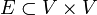
von Kanten (edges)
- Die Paare (u,v) und (v,u) gelten dabei als nur eine Kante (somit gilt die Symmetriebeziehung: (u,v) ∈ E => (v,u) ∈ E ). Die Anzahl der Kanten, die sich an einem Knoten treffen, wird als Grad (engl. degree) dieses Knotens bezeichnet:
- degree(v) = |{v' ∈ V | (v,v') ∈ E}|
- (Die Syntax |{...}| bezeichnet dabei die Mächtigkeit der angegebenen Menge, also die Anzahl der Elemente in der Menge.)
Der Graph des Königsberger Brückenproblems ist ungerichtet. Bezeichnet man die Knoten entsprechend des folgenden Bildes
c /| \ \| \ b---d /| / \| / a
gilt für die Knotengrade: degree(a) == degree(c) == degree(d) == 3 und degree(b) == 5. Genauer muss man bei diesem Graphen von einem Multigraphen sprechen, weil es zwischen einigen Knotenpaaren (nämlich (a, b) sowie (b, c)) mehrere Kanten ("Mehrfachkanten") gibt. Wir werden in dieser Vorlesung nicht näher auf Multigraphen eingehen.
- Gerichteter Graph
- Ein Graph heißt gerichtet, wenn die Kanten (u,v) und (v,u) unterschieden werden. Die Kante (u,v) ∈ E wird nun als Kante von u nach v (aber nicht umgekehrt) interpretiert. Entsprechend unterscheidet man jetzt den eingehenden und den ausgehenden Grad jedes Knotens:
- out_degree(v) = |{v' ∈ V | (v,v') ∈ E}|
- in_degree(v) = |{v' ∈ V| (v',v) ∈ E}|
- out_degree(v) = |{v' ∈ V | (v,v') ∈ E}|
Das folgende Bild zeigt einen gerichteten Graphen. Hier gilt out_degree(1) == out_degree(3) == in_degree(2) == in_degree(4) == 2 und in_degree(1) == in_degree(3) == out_degree(2) == out_degree(4) == 0:
- Vollständiger Graph
- Ein vollständiger Graph ist ein ungerichteter Graph, bei dem jeder Knoten mit allen anderen Knoten verbunden ist.
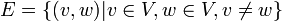
- Ein vollständiger Graph mit |V| Knoten hat
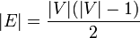
Kanten.
Die folgenden Abbildungen zeigen die vollständigen Graphen mit einem bis fünf Knoten (auch als K1 bis K5 bezeichnet).
| 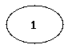 k1 |
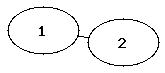 k2 |
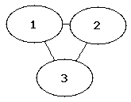 k3 |
| 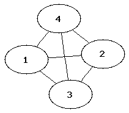 k4 |
Rätsel
Auf einer Party sind Leute. Alle stoßen miteinander an. Es hat 78 mal "Pling" gemacht.
Wieviele Leute waren da? Antwort: Jede Person ist ein Knoten des Graphen, jedes Antoßen eine Kante.
Da alle miteinander angestoßen haben, handelt es sich um einen vollständigen Graphen. Mit
|V|(|V|-1)/2 = 78 folgt, dass es 13 Personen waren.
- Gewichteter Graph
- Ein Graph heißt gewichtet, wenn jeder Kante eine reelle Zahl zugeordnet ist. Bei vielen Anwendungen beschränkt man sich auch auf nichtnegative reelle Gewichte. In einem gerichteten Graphen können die Gewichte der Kanten (u,v) und (v,u) unterschiedlich sein.
Die Gewichte kodieren Eigenschaften der Kanten, die für die jeweilige Anwendung interessant sind. Bei der Berechnung des maximalen Flusses in einem Netzwerk sind die Gewichte z.B. die Durchflusskapazitäten jeder Kante, bei der Suche nach kürzesten Weges kodieren Sie den Abstand zwischen den Endknoten der Kante, bei Währungsnetzwerken (jeder Knoten ist eine Währung) geben sie die Wechselkurse an, usw..
- Teilgraphen
- Ein Graph G' = (V',E') ist ein Teilgraph eines Graphen G, wenn gilt:
- V' ⊆ V
- E' ⊂ E
- Er heißt (auf)spannender Teilgraph, wenn gilt:
- V' = V
- Er heißt induzierter Teilgraph, wenn gilt:
- e = (u,v) ∈ E' ⊂ E ⇔ u ∈ V' und v ∈ V'
- Den von V' induzierten Teilgraphen erhält man also, indem man aus G alle Knoten löscht, die nicht in V' sind, sowie alle Kanten (und nur diese Kanten), die einen der gelöschten Knoten als Endknoten haben.
- Wege, Pfade, Zyklen, Kreise, Erreichbarkeit
- Sei G = (V,E) ein Graph (ungerichtet oder gerichteter) Graph. Dann gilt folgende rekursive Definition:
- Für v ∈ V ist (v) ein Weg der Länge 0 in G
- Falls
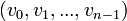
ein Weg ist, und eine Kante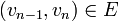
existiert, dann ist auch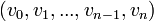
ein Weg, und er hat die Länge n.
- Ein Weg ist also eine nichtleere Folge von Knoten, so dass aufeinander folgende Knoten stets durch eine Kante verbunden sind. Die Länge des Weges entspricht der Anzahl der Kanten im Weg (= Anzahl der Knoten - 1).
- Ein Pfad ist ein Weg, bei dem alle Knoten vi verschieden sind.
- Ein Zyklus ist ein Weg, der zum Ausgangspunkt zurückkehrt, wenn also v0 = vn gilt.
- Ein Kreis ist ein Zyklus ohne Überkreuzungen. Das heisst, es gilt v0 = vn und ist ein Pfad.
- Ein Knoten w ∈ V ist von einem anderen Knoten v ∈ V aus erreichbar genau dann, wenn ein Weg (v, ..., w) existiert. Wir schreiben dann
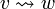
.
In einem ungerichteten Graph ist die Erreichbarkeits-Relation stets symmetrisch, das heisst aus folgt
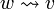
. In einem gerichteten Graphen ist dies im allgemeinen nicht der Fall.Bestimmte Wege haben spezielle Namen
- Eulerweg
- Ein Eulerweg ist ein Weg, der alle Kanten genau einmal enthält.
Die eingangs erwähnte Frage des Königsberger Brückenproblems ist equivalent zu der Frage, ob der dazugehörige Graph einen Eulerweg besitzt (daher der Name). Ein anderes bekanntes Beispiel ist das "Haus vom Nikolaus": Wenn man diesen Graphen in üblicher Weise in einem Zug zeichnet, erhält man gerade den Eulerweg.
O / \ O----O | \/ | | /\ | "Das Haus vom Nikolaus": Alle Kanten werden nur einmal passiert O----O
- Hamiltonweg
- Ein Hamiltonweg ist ein Weg, der alle Knoten genau einmal enthält. Das "Haus vom Nikolaus" besitzt auch einen Hamiltonweg:
O
/
O----O
/
/ Alle Knoten werden nur einmal passiert
O----O
- Hamiltonkreis
- Ein Hamiltonkreis ist ein Kreis, der alle Knoten genau einmal enthält. Auch ein solches Gebilde ist im Haus von Nilolaus enthalten:
O / \ O O | | v0 = vn | | vi != vj Für Alle i,j i !=j; i,j >0; i,j < n O----O
Die folgende Skizze zeigt hingegen einen Zyklus: Der Knoten rechts unten sowie die untere Kante sind zweimal enthalten (die Kante einmal von links nach rechts und einmal von rechts nach links):
O
/ \
O O
\ |
\ | Zyklus
O====O
- Zusammenhang, Zusammenhangskomponenten
- Ein ungerichteter Graph G heißt zusammenhängend, wenn für alle v,w ∈ V gilt:
- Ein gerichteter Graph G ist zusammenhängend, wenn für alle v,w ∈ V gilt:
- oder .
- Er ist stark zusammenhängend, wenn für alle v,w ∈ V gilt:
- und .
- Entsprechende Definitionen gelten für Teilgraphen G'. Ein Teilgraph G' heisst Zusammenhangskomponente von G, wenn er ein maximaler zusammenhängender Teilgraph ist, d.h. wenn G' zusammenhängend ist, und man keine Knoten und Kanten aus G mehr zu G' hinzufügen kann, so dass G' immer noch zusammenhängend bleibt. Entsprechend definiert man starke Zusammenhangskomponenten in einem gerichteten Graphen.
- Planarer Graph, ebener Graph
- Ein Graph heißt planar, wenn er so in einer Ebene gezeichnet werden kann, dass sich die Kanten nicht schneiden (außer an den Knoten). Ein Graph heißt eben, wenn er tatsächlich so gezeichnet ist, dass sich die Kanten nicht schneiden. Die Einbettung in die Ebene ist im allgemeinen nicht eindeutig.
Beispiele:
Der folgende Graph ist planar und eben:
O
/|\
/ O \
/ / \ \
O O
Das "Haus vom Nikolaus" ist ebenfalls planar, wird aber üblicherweise nicht als ebener Graph gezeichnet, weil sich die Diagonalen auf der Wand überkreuzen:
O / \ O----O | \/ | | /\ | O----O
Eine ebene Einbettung dieses Graphen wird erreicht, wenn man eine der Diagonalen ausserhalb des Hauses zeichnet. Der Graph (also die Menge der Knoten und Kanten) ändert sich dadurch nicht.
O
/ \
--O----O
/ | / |
| | / |
| O----O Das "Haus vom Nikolaus" als ebener Graph gezeichnet.
\ /
-----
Eine alternative Einbettung erhalten wir, wenn wir die andere Diagonale außerhalb des Hauses zeichnen:
O
/ \
O----O--|
| \ | |
| \ | |
O----O | Alternative Einbettung des "Haus vom Nikolaus".
| |
|-------|
Jede Einbettung eines planaren Graphen (also jeder ebene Graph) definiert eine eindeutige Menge von Regionen:
|----O @ | /@ \ | O----O | |@ / | | | / @| | O----O @ entspricht jeweils einer Region. Auch ausserhalb der Figur ist eine Region (die sogenannte unendliche Region). |@ | |-------|
Der vollständige Graph K5 ist kein planarer Graph, da sich zwangsweise Kanten schneiden, wenn man diesen Graphen in der Ebene zeichnet.
- Dualer Graph
- Jeder ebene Graph G = (V, E) hat einen dualen Graphen D = (VD, ED), dessen Knoten und Kanten wie folgt definiert sind:
- VD enthält einen Knoten für jede Region des Graphen G
- Für jede Kante e ∈ E gibt es eine duale Kante eD ∈ ED, die die an e angrenzenden Regionen (genauer: die entsprechenden Knoten in D) verbindet.
Die folgende Abbildung zeigt einen Graphen (grau) und seinen dualen Graphen (schwarz). Die Knoten des dualen Graphen sind mit Zahlen gekennzeichnet und entsprechen den Regionen des Originalgraphen. Jeder (grauen) Kante des Originalgraphen entspricht eine (schwarze) Kante des dualen Graphen.
Für duale Graphen gilt: Wenn der Originalgraph zusammenhängend ist, enthält jede Region des dualen Graphen genau einen Knoten des Originalgraphen. Deshalb ist der duale Graph des dualen Graphen wieder der Originalgraph. Bei nicht-zusammenhängenden Graphen gilt dies nicht (vgl. das Fenster bei obigem Bild). In diesem Fall hat der duale Graph mehrere mögliche Einbettungen in die Ebene (man kann z.B. die rechte Kante zwischen Knoten 2 und 4 auch links vom Fenster einzeichnen), und man erhält nicht notwendigerweise den Originalgraphen, wenn man den dualen Graphen des dualen berechnet.
- Baum
- Ein Baum ist ein zusammenhängender, kreisfreier Graph.
Beispiel: Binärer Suchbaum
- Spannbaum
- Ein Spannbaum eines zusammenhängenden Graphen G ist ein zusammenhängender, kreisfreier Teilgraph von G, der alle Knoten von G enthält
Beispiel: Spannbaum für das "Haus des Nikolaus"
O / O O | / | / O----O
Der Spannbaum eines Graphen mit |V| Knoten hat stets |V| - 1 Kanten.
- Wald
- Ein Wald ist ein unzusammenhängender, kreisfreier Graph.
- Jede Zusammenhangskomponente eines Waldes ist ein Baum.
Repräsentation von Graphen
Sei G = ( V, E ) gegeben und liege V in einer linearen Sortierung vor.
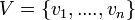
- Adjazenzmatrix
- Ein Graph kann durch eine Adjazenzmatrix repräsentiert werden, die soviele Zeilen und Spalten enthält, wie der Graph Knoten hat. Die Elemente der Adjazenzmatrix sind "1", falls eine Kante zwischen den zugehörigen Knoten existiert:
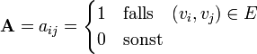
- Die Indizes der Matrix entsprechen also den Indizes der Knoten gemäß der gegebenen Sortierung. Im Falle eines ungerichteten Graphen ist die Adjazenzmatrix stets symmetrisch (d.h. es gilt
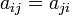
), bei einem gerichteten Graphen ist sie im allgemeinen unsymmetrisch.
Beispiel für einen ungerichteten Graphen:
v = { a,b,c,d } b d
| \ / |
| \/ |
| /\ |
| / \ |
a c
a b c d
-----------
(0 1 0 1) |a
A = (1 0 1 0) |b
(0 1 0 1) |c
(1 0 1 0) |d
Die Adjazenzmatrixdarstellung eignet sich besonders für dichte Graphen (d.h. wenn die Zahl der Kanten in O(|V|2) ist.
- Adjazenzlisten
- In der Adjazenzlistendarstellung wird der Graph als Liste von Knoten repräsentiert, die für jeden Knoten einen Eintrag enthält. Der Eintrag für jeden Knoten ist wiederum eine Liste, die die Nachbarknoten dieses Knotens enthält:
- graph = {adjazencyList(v) | v ∈ V}
- adjazencyList(v) = {v' ∈ V | (v, v') ∈ E}
In Python implementieren wir Adjazenzlisten zweckmäßig als Array von Arrays:
graph = [[...],[...],...,[...]] Adjazenzliste für Knoten => 0 1 n
Wenn wir bei dem Graphen oben die Knoten wie bei der Adjazenzmatrix indizieren (also a => 0, b => 1, c => 2, d => 3), erhalten wir die Adjazenzlistendarstellung:
graph = [[b, d], [a, c],[b, d], [a, c]]
Auf die Nachbarknoten eines durch seinen Index node gegebenen Knotens können wir also wie folgt zugreifen:
for neighbors in graph[node]:
... # do something with neighbor
Die Adjazenzlistendarstellung ist effizienter, wenn der Graph nicht dicht ist, so dass viele Einträge der Adjazenzmatrix Null wären. In der Vorlesung werden wir nur diese Darstellung verwenden.
- Transponierter Graph
- Den transponierten Graphen GT eines gerichteten Graphen G erhält man, wenn man alle Kantenrichtungen umkehrt.
Bei ungerichteten Graphen hat die Transposition offensichtlich keinen Effekt, weil alle Kanten bereits in beiden Richtungen vorhanden sind, so dass GT = G gilt. Bei gerichteten Graphen ist die Transposition einfach, wenn der Graph als Adjazenzmatrix implementiert ist, weil man einfach die transponierte Adjazenzmatrix verwenden muss (beachte, dass sich die Reihenfolge der Indizes umkehrt):
- AT = aji
Ist der Graph hingegen durch eine Adjazenzliste repräsentiert, muss etwas mehr Aufwand getrieben werden:
def transposeGraph(graph):
gt = [[] for k in graph] # zunächst leere Adjazenzlisten von GT
for node in range(len(graph)):
for neighbor in graph[node]:
gt[neighbor].append(node) # füge die umgekehrte Kante in GT ein
return gt
Durchlaufen von Graphen (Graph Traversal)
Wir betrachten zunächst ungerichtete Graphen mit V Knoten und E Kanten. Eine grundlegende Aufgabe in diesen Graphen besteht darin, alle Knoten in einer bestimmten Reihenfolge genau einmal zu besuchen. Hierbei darf man sich von einem gegebenen Startknoten aus nur entlang der Kanten des Graphen bewegen. Die beim Traversieren benutzen Kanten bilden einen Baum, dessen Wurzel der Startknoten ist und der den gesamten Graphen aufspannt, falls der Graph zusammenhängend ist. (Beweis: Da jeder Knoten nur einmal besucht wird, gibt es für jeden besuchten Knoten [mit Ausnahme des Startknotens] genau eine eingehende Kante. Ist der Graph zusammenhängend, wird jeder Knoten tatsächlich erreicht und es gibt genau (V-1) Kanten, exakt soviele wie für einen Baum mit V Knoten notwendig sind.) Ist der Graph nicht zusammenhängend, wird jeder zusammenhängende Teilgraph (jede Zusammenhangskomponente) getrennt traversiert, und man erhält einen sogenannten Wald mit einem Baum pro Zusammenhangskomponente. Die beiden grundlegenden Traversierungsmethoden Tiefensuche und Breitensuche werden im folgenden vorgestellt.
Tiefensuche in Graphen (Depth First Search, DFS)
Die Idee der Tiefensuche besteht darin, jeden besuchten Knoten sofort über die erste Kante wieder zu verlassen, die zu einem noch nicht besuchten Knoten führt. Man findet dadurch schnell einen möglichst langen Pfad durch den Graphen, und der Traversierungs-Baum wird zunächst in die Tiefe verfolgt, daher der Name des Verfahrens. Hat ein Knoten keine unbesuchten Nachbarknoten mehr, geht man im Baum auf demselben Weg zurück (sogenanntes back tracking), bis man einen Knoten findet, der noch einen unbesuchten Nachbarn besitzt, und traversiert diese nach dem gleichen Muster. Gibt es gar keine unbesuchten Knoten mehr, kehrt die Suche zum Startknoten zurück und endet dort.
Die folgende rekursive Implementation der Tiefensuche erwartet den Graphen in Adjazenzlistendarstellung und beginnt die Suche beim Knoten startnode. Die Information, ob ein Knoten bereits besucht wurde, wird im Array visited gespeichert. Ein solches Array, das zusätzliche Informationen über die Knoten des Graphen bereitstellt, wir property map genannt. (Die Verwendung von property maps hat sich gegenüber der alternativen Idee durchgesetzt, solche Eigenschaften in speziellen Knotenklassen zu speichern. Im letzteren Fall braucht man nämlich für jede Anwendung eine angepasste Knotenklasse mit den jeweils gewünschten Attributen und damit auch angepasste Implementationen der Graphenfunktionen, was sich als sehr aufwändig erwiesen hat.)
def dfs(graph, startnode):
visited = [False]*len(graph) # Flags, welche Knoten bereits besucht wurden
def visit(node): # rekursive Hilfsfunktion, die den gegebenen Knoten und dessen Nachbarn besucht
if not visited[node]: # Besuche node, wenn er noch nicht besucht wurde
visited[node] = True # Markiere node als besucht
print(node) # Ausgabe der Knotennummer - pre-order
for neighbor in graph[node]: # Besuche rekursiv die Nachbarn
visit(neighbor)
visit(startnode)
Ausgabe für den Graphen in diesem Bild (es handelt sich um einen ungerichteten Graphen, die Pfeile symbolisieren nur die Suchrichtung beim Traversal):
>>> dfs(graph, 1) 1 2 4 3 6 7 5
def dfs(graph, startnode):
visited = [False]*len(graph) # Flags, welche Knoten bereits besucht wurden
def visit(node): # rekursive Hilfsfunktion, die den gegebenen Knoten und dessen Nachbarn besucht
if not visited[node]: # Besuche node, wenn er noch nicht besucht wurde
visited[node] = True # Markiere node als besucht
for neighbor in graph[node]: # Besuche rekursiv die Nachbarn
visit(neighbor)
print(node) # Ausgabe der Knotennummer - post-order
visit(startnode)
Es ergibt sich jetzt die Ausgabe:
>>> dfs(graph, 1) 6 7 3 4 5 2 1
In realem Code ersetzt man die print-Ausgaben natürlich durch anwendungsspezifische Aktionen und Berechnungen. Einige Anwendungen sind uns im Kapitel Suchen bereits begegnet.
- Anwendungen der Pre-Order Traversierung
- Kopieren eines Graphen: kopiere zuerst den besuchten Knoten, dann seine Nachbarn und die dazugehörigen Kanten (sowie die Kanten zu bereits besuchten Knoten, die in der Grundversion der Tiefensuche ignoriert werden).
- Bestimmen der Zusammenhangskomponenten eines Graphen (siehe unten)
- In einem Zeichenprogramm: fülle eine Region mit einer Farbe ("flood fill"). Dabei ist jedes Pixel ein Knoten des Graphen und wird mit seinen 4 Nachbarpixeln verbunden. Die Tiefensuche startet bei der Mausposition und endet am Rand des betreffendcen Gebiets.
- Falls der Graph ein Baum ist: bestimme den Abstand jedes Knotens von der Wurzel
- Falls der Graph ein Parse-Baum ist, wobei innere Knoten Funktionsaufrufe, Kindknoten Funktionsargumente, und Blattknoten Werte repräsentieren: drucke den zugehörigen Ausdruck aus (also immer zuerst den Funktionsnamen, dann die Argumente, die wiederum geschachtelte Funktionsaufrufe sein können).
- Anwendungen der Post-Order Traversierung
- Löschen eines Graphen: lösche zuerst die Nachbarn, dann den Knoten selbst
- Bestimmen einer topologischen Sortierung eines azyklischen gerichteten Graphens (siehe unten)
- Falls der Graph ein Baum ist: bestimme den Abstand jedes Knotens von den Blättern (also die Tiefe des Baumes, siehe Übung 5)
- Falls der Graph ein Parse-Baum ist: führe die zugehörige Berechnung aus (d.h. berechne zuerst die geschachtelten inneren Funktionen, dann mit diesen Ergebnissen die nächst äußeren usw., siehe Übung 5).
- Anwendungen, die Pre- und Post-Order benötigen
- Weg aus einem Labyrinth: die Pre-Order dokumentiert die Suche nach dem Weg, die Post-Order zeigt den Rückweg aus Sackgassen (siehe Übung 9).
Im Spezialfall, wenn der Graph ein Binärbaum ist, unterscheidet man noch eine dritte Variante der Traversierung, nämlich die in-order Traversierung. In diesem Fall behandelt man den Vaterknoten nach den linken, aber vor den rechten Kindern. Diese Reihenfolge wird beim Tree Sort Algorithmus verwendet. Diese Sortierung verwendet man auch, wenn man einen Parse-Baum mit binären Operatoren (statt Funktionsaufrufen) ausgeben will, siehe Übung 5.
Eine nützliche Erweiterung der Tiefensuche besteht darin, Informationen über den Verlauf der Suche zu sammeln und am Ende zurückzugeben, so dass andere Algorithmen diese Information nutzen können. Typische Beispiele dafür sind eine Reihenfolge der Knoten (in discovery oder finishing order) oder die Vorgänger jedes Knotens im Tiefensuchbaum (also von welchem Knoten aus man den jeweiligen Knoten zuerst erreicht hat). Wir führen dafür drei neue Arrays ein.
def dfs(graph, startnode):
visited = [False]*len(graph) # wurde ein Knoten bereits besucht?
parents = [None]*len(graph) # registriere für jeden Knoten den Vorgänger im Tiefensuchbaum
discovery_order = [] # enthält am Ende die pre-order Sortierung
finishing_order = [] # enthält am Ende die post-order Sortierung
def visit(node, parent): # rekursive Hilfsfunktion
if not visited[node]: # besuche 'node', wenn noch nicht besucht wurde
visited[node] = True # markiere 'node' als besucht
parents[node] = parent # speichere den Vorgänger von 'node'
discovery_order.append(node) # registriere, dass 'node' jetzt entdeckt wurde
for neighbor in graph[node]: # besuche rekursiv die Nachbarn ...
visit(neighbor, node) # ... wobei 'node' zu deren Vorgänger wird
finishing_order.append(node) # registriere, dass 'node' jetzt fertiggestellt wurde
visit(startnode, None) # beginne bei 'startnode', der keinen Vorgänger hat
return parents, discovery_order, finishing_order # gib die zusätzliche Informationen zurück
Beginnt man die Suche bei Knoten 1, entsprechen die Inhalte der Arrays discovery_order und finishing_order für den obigen Beispielgraphen gerade den vorher angeführten print-Ausgaben. Die Vorgänger im Array parents lauten:
Knotennummer | 0 | 1 | 2 | 3 | 4 | 5 | 6 | 7 --------------+-----+-----+-----+-----+-----+-----+-----+----- Vorgänger | None| None| 1 | 4 | 2 | 2 | 3 | 3
Die Knotennummern dienen hier als Array-Indizes, und die dazugehörigen Arrayeinträge verweisen auf die Vorgänger. Man kann mit diesen Informationen den Weg von jedem Knoten zur Wurzel zurückverfolgen und damit den Tiefensuchbaum von unten nach oben rekonstruieren. Man beachte, dass parents den Eintrag None für die Knoten 0 umd 1 enthält, weil Knoten 0 in diesem Graphen nicht existiert und Knoten 1 als Wurzel der Suche keinen Vorgänger hat.
Wird das Array parents verwendet, kann man den Code vereinfachen, indem man das Array visited einspart: Sobald ein Knoten erstmals besucht wurde, ist sein Vorgänger bekannt und damit ungleich None. Die Abfrage if parents[node] is None: liefert damit das gleiche Resultat wie die Abfrage if not visited[node]:. Einzige Ausnahme ist der Startknoten der Suche, dessen Vorgänger bisher None war. Dieses Problem löst man leicht mit der Konvention, dass man den Startknoten zu seinem eigenen Vorgänger erklärt. Man startet die Suche also mit visit(startnode, startnode) statt mit visit(startnode, None).
Breitensuche in Graphen (Breadth First Search, BFS)
Im Gegensatz zur Tiefensuche werden bei der Breitensuche alle Nachbarknoten abgearbeitet, bevor man rekursiv deren Nachbarn besucht. Man betrachtet somit zuerst alle Knoten, die den Abstand 1 von Startknoten haben, dann diejenigen mit dem Abstand 2 usw. Diese Reihenfolge bezeichnet man als level-order. Wir sind ihr beispielsweise in Übung 6 begegnet, als die ersten 7 Ebenen eines Treap ausgegeben werden sollten. Man implementiert Breitensuche zweckmäßig mit Hilfe einer Queue, die die Knoten in First In - First Out - Reihenfolge bearbeitet. Eine geeignete Datenstruktur hierfür ist die Klasse deque aus dem Python-Modul collections (eine Deque implementiert sowohl die Funktionalität einer Queue wie auch die eines Stacks, siehe Übung 3):
from collections import deque
def bfs(graph, startnode):
parents = [None]*len(graph) # speichere für jeden Knoten den Vorgänger im Breitensuchbaum
parents[startnode] = startnode # Konvention: der Startknoten hat sich selbst als Vorgänger
q = deque() # Queue für die zu besuchenden Knoten
q.append(startnode) # Startknoten in die Queue einfügen
while len(q) > 0: # solange noch Knoten zu bearbeiten sind
node = q.popleft() # Knoten aus der Queue nehmen (first in - first out)
# Beachte: mit q.pop() bekommen wir DFS
print(node) # den Knoten bearbeiten (hier: Knotennummer drucken)
for neighbor in graph[node]: # die Nachbarn expandieren
if parents[neighbor] is None: # Nachbar wurde noch nicht besucht
parents[neighbor] = node # => Vorgänger merken, Knoten dadurch als "besucht" markieren
q.append(neighbor) # und in die Queue aufnehmen

Der Aufruf dieser Funktion liefert die Knoten des obigen Graphens ebenenweise, also zufällig genau in der Reihenfolge der Knotennummern:
>>> bfs(graph, 1) 1 2 3 4 5 6 7
Neben der ebenenweisen Ausgabe hat die Breitensuche viele weitere wichtige Anwendungen, z.B. beim Testen, ob ein gegebener Graph bi-partit ist (siehe WikiPedia), sowie bei der Suche nach kürzesten Wegen (siehe unten) und kürzesten Zyklen.
Weitere Anwendungen der Tiefensuche
Die Tiefensuche hat zahlreiche Anwendungen, wobei der grundlegende Algorithmus immer wieder leicht modifiziert und an die jeweilige Aufgabe angepasst wird. Wir beschreiben im folgenden einige Beispiele.
Test, ob ein ungerichteter Graph azyklisch ist
Ein zusammenhängender ungerichteter Graph ist azyklisch (also ein Baum) genau dann, wenn es nur einen möglichen Weg von jedem Knoten zu jedem anderen gibt. (Bei gerichteten Graphen sind die Verhältnisse komplizierter. Wir behandeln dies weiter unten.) Das kann man mittels Tiefensuche leicht feststellen: Die Kante, über die wir einen Knoten erstmals erreichen, ist eine Baumkante des Tiefensuchbaums. Erreichen wir einen bereits besuchten Knoten nochmals über eine andere Kante, haben wir einen Zyklus gefunden. Dabei müssen wir allerdings beachten, dass in einem ungerichteten Graphen jede Baumkante zweimal gefunden wird, einmal in Richtung vom Vater zum Kind und einmal in umgekehrter Richtung. Im zweiten Fall endet die Kante zwar in einem bereits besuchten Knoten (dem Vater), aber es entsteht dadurch kein Zyklus. Den Vaterknoten müssen wir deshalb überspringen, wenn wir über die Nachbarn iterieren:
def undirected_cycle_test(graph): # Annahme: der Graph ist zusammenhängend
# (andernfalls führe den Algorithmus für jede Zusammenhangskomponente aus)
visited = [False]*len(graph) # Flags für bereits besuchte Knoten
def visit(node, from_node): # rekursive Hilfsfunktion: gibt True zurück, wenn Zyklus gefunden wurde
if not visited[node]: # wenn node noch nicht besucht wurde
visited[node] = True # markiere node als besucht
for neighbor in graph[node]: # besuche die Nachbarn ...
if neighbor == from_node: # ... aber überspringe den Vaterknoten
continue
if visit(neighbor, node): # ... signalisiere, wenn rekursiv ein Zyklus gefunden wurde
return True
return False # kein Zyklus gefunden
else:
return True # Knoten schon besucht => Zyklus
startnode = 0 # starte bei beliebigem Knoten (hier: Knoten 0)
return visit(startnode, startnode) # gebe True zurück, wenn ein Zyklus gefunden wurde
Wenn wir einen Zyklus finden, wird das weitere Traversieren das Graphen abgebrochen, denn ein Graph, der einmal zyklisch war, kann später nicht wieder azyklisch werden. Die notwendige Modifikation für unzusammenhängende Graphen erfolgt analog zum Algorithmus für die Detektion von Zusammenhangskomponenten, der im nächsten Abschnitt beschrieben wird.
Damenproblem
Tiefensuche wird häufig verwendet, um systematisch nach der Lösung eines logischen Rätsels (oder allgemeiner nach der Lösung eines diskreten Optimierungsproblems) zu suchen. Besonders anschaulich hierfür ist das Damenproblem. Die Aufgabe besteht darin,  Damen auf einem Schachbrett der Größe
Damen auf einem Schachbrett der Größe
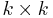
so zu platzieren, dass sie sich (nach den üblichen Schach-Regeln) nicht gegenseitig schlagen können. Das folgende Diagramm zeigt eine Lösung für den Fall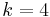
. Die Positionen der Damen werden dabei wie üblich durch die Angabe der Spalte (Linie) mit Buchstaben und der Zeile (Reihe) mit Zahlen kodiert, hier also A2, B4, C1, D3:--------------- | | X | | | 4 |---|---|---|---| | | | | X | 3 |---|---|---|---| | X | | | | 2 |---|---|---|---| | | | X | | 1 --------------- A B C D
Um das Problem systematisch zu lösen, konstruieren wir einen gerichteten Graphen, dessen Knoten die möglichen Positionen der Damen kodieren. Wir verbinden Knoten, die zu benachbarten Linien gehören, genau dann mit einer Kante, wenn die zugehörigen Positionen kompatibel sind, also wenn sich die dort positionierten Damen nicht schlagen können. Der resultierende Graph für hat folgende Gestalt:

Knoten, die zur selben Reihe oder Linie gehören, sind beispielsweise nicht direkt verbunden, weil zwei Damen niemals in derselben Linie oder Reihe stehen dürfen. Um eine erlaubte Konfiguration zu finden, verwenden wir nun eine angepasste Version der Tiefensuche: Wir beginnen die Suche beim Knoten START. Sobald wir den Knoten STOP erreichen, beenden wir die Suche und lesen die Lösung am gerade gefundenen Weg von Start nach Stop ab. Zwei kleine Modifikationen des Grundalgorithmus stellen sicher, dass die Bedingungen der Aufgabe eingehalten werden: Wir dürfen bei der Tiefensuche nur dann zu einem Nachbarn weitergehen, wenn die betreffende Position mit allen im Pfad bereits gesetzten Positionen kompatibel ist, andernfalls ist diese Kante tabu. Landen wir aufgrund dieser Regel in einer Sackgasse (also in einem Knoten, wo keine der ausgehenden Kanten erlaubt ist), müssen wir zur nächsten erlaubten Abzweigung zurückgehen (Backtracking). Beim Zurückgehen müssen wir das parent-Flag wieder auf None zurücksetzen, weil der betreffende Knoten ja möglicherweise auf einem anderen erlaubten Weg erreichbar ist.
Der folgende Graph zeigt einen solchen Fall: Wir haben zwei Damen auf die Felder A1 und B3 positioniert (grüne Pfeile). Die einzig ausgehende Kante von B3 führt zum Knoten C1, welcher aber mit der Position A1 inkompatibel ist, so dass diese Kante nicht verwendet werden darf (roter Pfeil). Das Backtracking muss jetzt zu Knoten A1 zurückgehen (dabei wird das parent-Flag von B3 wieder auf None gesetzt), weil A1 mit der Kante nach B4 eine weitere Option hat, die geprüft werden muss (die allerdings hier auch nicht zum Ziel führt).

Nach einigen weiteren Sackgassen findet man schließlich den Pfad A2, B4, C1, D3, der im folgenden Graphen grün markiert ist und der obigen Lösung entspricht:

Finden von Zusammenhangskomponenten
Das Auffinden und Markieren von Zusammenhangskomponenten (also maximalen zusammenhängenden Teilgraphen) ist eine grundlegende Aufgabe in ungerichteten, unzusammenhängenden Graphen (bei gerichteten Graphen sind die Verhältnisse wiederum komplizierter, siehe unten). Zwei Knoten u und v gehören zur selben Zusammenhangskomponente genau dann, wenn es einen Pfad von u nach v gibt (da der Graph ungerichtet ist, gibt es dann auch einen Pfad von v nach u). Man sagt auch, dass "v von u aus erreichbar" ist. Unzusammenhängende Graphen entstehen in der Praxis häufig, wenn die Kanten gewisse Relationen zwischen den Knoten kodieren:
- Wenn die Knoten Städte sind und die Kanten Straßen, sind diejenigen Städte in einer Zusammenhangskomponente, die per Auto von einander erreichbar sind. Unzusammenhängende Graphen entstehen hier beispielsweise, wenn eine Insel nicht durch eine Brücke erschlossen ist, wenn Grenzen gesperrt sind oder wenn ein Gebirge zu unwegsam ist, um Straßen zu bauen.
- Wenn Knoten Personen sind, und Kanten die Eltern-Kind-Relation beschreiben, so umfasst jede Zusammenhangskomponenten die Verwandten (auch wenn sie nur über viele "Ecken" verwandt sind).
- In der Bildverarbeitung entsprechen Knoten den Pixeln, und dieselben werden durch eine Kante verbunden, wenn sie zum selben Objekt gehören. Die Zusammenhangskomponenten entsprechen somit den Objekten im Bild (siehe Übungsaufgabe).
Die Zusammenhangskomponenten bilden eine Äquivalenzrelation. Folglich kann für jede Komponente ein Reprässentant bestimmt werden, der sogenannte "Anker". Kennt jeder Knoten seinen Anker, ist das Problem der Zusammenhangskomponenten gelöst.
Lösung mittels Tiefensuche
Unser erster Ansatz ist, den Anker mit Hilfe der Tiefensuche zu finden. Anstelle der property map visited verwenden wir diesmal eine property map anchors, die für jeden Knoten die Knotennummer des zugehörigen Ankers angibt, oder None, wenn der Knoten noch nicht besucht wurde. Dabei verwenden wir wieder die Konvention, dass Anker auf sich selbst zeigen. Für viele Anwendungen ist es außerdem (oder stattdessen) zweckmäßig, die Zusammenhangskomponenten mit einer laufenden Nummer, einem sogenannten Label, durchzuzählen. Dann kann man zusätzliche Informationen zu jeder Komponente (beispielsweise deren Größe) einfach in einem Array speichern, das über die Labels indexiert wird. Die folgende Version der Tiefensuche bestimmt sowohl die Anker als auch die Labels für jeden Knoten:
def connectedComponents(graph):
anchors = [None] * len(graph) # property map für Anker jedes Knotens
labels = [None] * len(graph) # property map für Label jedes Knotens
def visit(node, anchor):
"""anchor ist der Anker der aktuellen ZK"""
if anchors[node] is None: # wenn node noch nicht besucht wurde:
anchors[node] = anchor # setze seinen Anker
labels[node] = labels[anchor] # und sein Label
for neighbor in graph[node]: # und besuche die Nachbarn
visit(neighbor, anchor)
current_label = 0 # Zählung der ZK beginnt bei 0
for node in range(len(graph)):
if anchors[node] is None: # Anker noch nicht bekannt => neue ZK gefunden
labels[node] = current_label # Label des Ankers setzen
visit(node, node) # Knoten der neuen ZK rekursiv suchen
current_label += 1 # Label für die nächste ZK hochzählen
return anchors, labels
Interessant ist hier die Schleife über alle Knoten des Graphen am Ende des Algorithmus, die bei den bisherigen Versionen der Tiefensuche nicht vorhanden war. Um ihre Funktionsweise zu verstehen, nehmen wir für den Moment an, dass der Graph zusammenhängend ist. Dann findet diese Schleife den ersten Knoten des Graphen und führt die Tiefensuche mit diesem Knoten als Startknoten aus. Sobald die Rekursion zurückkehrt, sind alle Knoten des Graphen besucht (weil der Graph ja zusammenhängend war), so dass die Schleife alle weiteren Knoten überspringt (die if-Anweisung liefert für keinen weiteren Knoten True). Bei unzusammenhängenden Graphen dagegen erreicht die Tiefensuche nur die Knoten derselben Komponente, die im weiteren Verlauf der Schleife übersprungen werden. Findet die if-Anweisung jetzt einen noch nicht besuchten Knoten, muss dieser folglich in einer neuen Komponente liegen. Wir verwenden diesen Knoten als Anker und bestimmen die übrigen Knoten dieser Komponente wiederum mit Tiefensuche.
- Beispiel: ... under construction
Man erkennt, dass die Tiefensuche nach dem Anlagerungsprinzip vorgeht: Beginnend vom einem Startknoten (dem Anker) werden die Knoten der aktuellen Komponente nach und nach an den Tiefensuchbaum angehangen. Erst, wenn nichts mehr angelagert werden kann, geht der Algorithmus zur nächsten Komponente über.
Lösung mittels Union-Find-Algorithmus
Im Gegensatz zum Anlagerungsprinzip sucht der Union-Find-Algorithmus die Zusammenhangskomponenten mit dem Verschmelzungsprinzip: Eingangs wird jeder Knoten als ein Teilgraph für sich betrachtet. Dann iteriert man über alle Kanten und verbindet deren Endknoten jeweils zu einem gemeinsamen Teilgraphen (falls die beiden Enden einer Kante bereits im selben Teilgraphen liegen, wird diese Kante ignoriert). Solange noch Kanten vorhanden sind, werden dadurch immer wieder Teilgraphen in größere Teilgraphen verschmolzen. Am Ende bleiben die maximalen zusammenhängenden Teilgraphen (also gerade die Zusammenhangskomponenten) übrig. Dieser Algorithmus kommt ohne Tiefensuche aus und ist daher in der Praxis oft schneller, allerdings auch etwas komplizierter zu implementieren.
Der Schlüssel des Algorithmus ist eine Funktion findAnchor(), die zu jedem Knoten den aktuellen Anker sucht. Der Anker existiert immer, da jeder Knoten von Anfang an zu einem Teilgraphen gehört (anfangs ist jeder Teilgraph trivial und besteht nur aus dem Knoten selbst). Die Verschmelzung wird realisiert, indem der Anker des einen Teilgraphen seine Rolle verliert und stattdessen der Anker des anderen Teilgraphen eingesetzt wird.
Zur Verwaltung der Anker verwenden wir wieder eine property map anchors mit der Konvention, dass die Anker auf sich selbst verweisen. Es wäre jedoch zu teuer, wenn man bei jeder Verschmelzung alle Anker-Einträge der beteiligten Knoten aktualisieren müsste, da jeder Knoten im Laufe des Algorithmus mehrmals seinen Anker wechseln kann. Statt dessen definiert man Anker rekursiv: Verweist ein Knoten auf einen Anker, der mittlerweile diese Rolle verloren hat, folgt man dem Verweis von diesem Knoten (dem ehemaligen Anker) weiter, bis man einen tatsächlichen Anker gefunden hat - erkennbar daran, dass er auf sich selbst verweist. Diese Suchfunktion kann folgendermassen implementiert werden:
def findAnchor(anchors, node):
while node != anchors[node]: # wenn node kein Anker ist
node = anchors[node] # ... verfolge die Ankerkette weiter
return node
Allerdings kann diese Kette im Laufe vieler Verschmelzungen sehr lang werden, so dass das Verfolgen der Kette teuer wird. Man vermeidet dies durch die sogenannte Pfadkompression: Immer, wenn man den Anker gefunden hat, aktualisiert man den Eintrag am Anfang der Kette. Die Funktion findAnchor() wird dadurch nur wenig komplizierter:
def findAnchor(anchors, node):
start = node # wir merken uns den Anfang der Kette
while node != anchors[node]: # wenn node kein Anker ist
node = anchors[node] # ... verfolge die Ankerkette weiter
anchors[start] = node # Pfadkompression: aktualisiere den Eintrag am Anfang der Kette
return node
Man kann zeigen, dass die Ankersuche mit Pfadkompression zu einer fast konstanten amortisierten Laufzeit pro Aufruf führt.
Um mit jeder Kante des (ungerichteten) Graphen nur maximal einmal eine Verschmelzung durchzuführen, betrachten wir jede Kante nur in der Richtung von der kleineren zur größeren Knotennummer, die umgekehrte Richtung wird ignoriert. Außerdem ist es zweckmäßig, bei jeder Verschmelzung denjenigen Anker mit der kleineren Knotennummer als neuen Anker zu übernehmen. Dann gilt für jede Zusammenhangskomponente, dass gerade der Knoten mit der kleinsten Knotennummer der Anker ist (genau wie bei der Lösung mittels Tiefensuche), was die weitere Analyse vereinfacht, z.B. die Zuordnung der Labels zu den Komponenten am Ende des Algorithmus.
def unionFindConnectedComponents(graph):
anchors = list(range(len(graph))) # Initialisierung der property map: jeder Knoten ist sein eigener Anker
for node in range(len(graph)): # iteriere über alle Knoten
for neighbor in graph[node]: # ... und über deren ausgehende Kanten
if neighbor < node: # ignoriere Kanten, die in falscher Richtung verlaufen
continue
# hier landen wir für jede Kante des Graphen genau einmal
a1 = findAnchor(anchors, node) # finde Anker ...
a2 = findAnchor(anchors, neighbor) # ... der beiden Endknoten
if a1 < a2: # Verschmelze die beiden Teilgraphen
anchors[a2] = a1 # (verwende den kleineren der beiden Anker als Anker des
elif a2 < a1: # entstehenden Teilgraphen. Falls node und neighbor
anchors[a1] = a2 # den gleichen Anker haben, waren sie bereits im gleichen
# Teilgraphen, und es passiert hier nichts.)
# Bestimme jetzt noch die Labels der Komponenten
labels = [None]*len(graph) # Initialisierung der property map für Labels
current_label = 0 # die Zählung beginnt bei 0
for node in range(len(graph)):
a = findAnchor(anchors, node) # wegen der Pfadkompression zeigt jeder Knoten jetzt direkt auf seinen Anker
if a == node: # node ist ein Anker
labels[a] = current_label # => beginne eine neue Komponente
current_label += 1 # und zähle Label für die nächste ZK hoch
else:
labels[node] = labels[a] # node ist kein Anker => setzte das Label des Ankers
# (wir wissen, dass labels[a] bereits gesetzt ist, weil
# der Anker immer der Knoten mit der kleinsten Nummer ist)
return anchors, labels
- Beispiel: ... under construction
Kürzeste Wege (Pfade)
Eine weitere grundlegende Aufgabe in Graphen ist die Bestimmung eines kürzesten Weges zwischen zwei gegebenen Knoten. Dies hat offensichtliche Anwendungen bei Routenplanern und Navigationssystemen und ist darüber hinaus wichtiger Bestandteil anderer Algorithmen, z.B. bei der Berechnung eines maximalen Flusses mit der Methode von Edmonds und Karp.
Kürzeste Wege in ungewichteten Graphen mittels Breitensuche
Im Fall eines ungewichteten Graphen ist die Länge eines Weges einfach durch die Anzahl der durchlaufenen Kanten definiert. Daraus folgt, dass kürzeste Pfade mit einer leicht angepassten Version der Breitensuche gefunden werden können: Aufgrund des first in-first out-Verhaltens der Queue betrachtet die Breitensuche alle (erreichbaren) Knoten in der Reihenfolge ihres Abstandes vom Startknoten. Wenn wir den Zielknoten zum ersten Mal erreichen, und der gerade gefundene Weg vom Start zum Ziel hat die Länge L, muss dies der kürzeste Weg sein: Alle möglichen Wege der Länge L' < L hat die Breitensuche ja bereits betrachtet, ohne dass dabei der Zielknoten erreicht wurde. Daraus folgt übrigens eine allgemeine Eigenschaft aller Algorithmen für kürzeste Wege: Wenn der kürzeste Weg vom Start zum Ziel die Länge L hat, finden diese Algorithmen als Nebenprodukt auch die kürzesten Wege zu allen Knoten, für die L' < L gilt.
Um den Algorithmus zu implementieren, passen wir die Breitensuche so an, dass anstelle der property map visited eine property map parents verwendet wird, die für jeden besuchten Knoten den Vaterknoten im Breitensuchbaum speichert. Durch Rückverfolgen der parent-Kette können wir den Pfad vom Ziel zum Start rekonstruieren, und durch Umdrehen der Reihenfolge erhalten wir den gesuchten Pfad vom Start zum Ziel. Sobald der Zielknoten erreicht wurde, können wir die Breitensuche abbrechen (break-Befehl in der ersten while-Schleife). Falls der gegebene Graph unzusammenhängend ist, kann es passieren, dass gar kein Weg gefunden wird, weil Start und Ziel in verschiedenen Zusammenhangskomponenten liegen. Dies erkennen wir daran, dass die Breitensuche beendet wurde, ohne den Zielknoten zu besuchen. Dann gibt die Funktion statt eines Pfades dern Wert None zurück:
from collections import deque
def shortestPath(graph, startnode, destination):
parents = [None]*len(graph) # Registriere für jeden Knoten den Vaterknoten im Breitensuchbaum
parents[startnode] = startnode # startnode ist die Wurzel des Baums => verweist auf sich selbst
q = deque() # Queue für die zu besuchenden Knoten
q.append(startnode) # Startknoten in die Queue einfügen
while len(q) > 0: # Solange es noch unbesuchte Knoten gibt
node = q.popleft() # Knoten aus der Queue nehmen (first in - first out)
if node == destination: # Zielknoten erreicht
break # => Suche beenden
for neighbor in graph[node]: # Besuche die Nachbarn von node
if parents[neighbor] is None: # aber nur, wenn sie noch nicht besucht wurden
parents[neighbor] = node # setze node als Vaterknoten
q.append(neighbor) # und füge neighbor in die Queue ein
if parents[destination] is None: # Breitensuche wurde beendet ohne den Zielknoten zu besuchen
return None # => kein Pfad gefunden (unzusammenhängender Graph)
# Pfad durch die parents-Kette zurückverfolgen und speichern
path = [destination]
while path[-1] != startnode:
path.append(parents[path[-1]])
path.reverse() # Reihenfolge umdrehen (Ziel => Start wird zu Start => Ziel)
return path # gefundenen Pfad zurückgeben
Gewichtete Graphen
Das Problem der Suche nach kürzesten Wegen wird wesentlich interessanter und realistischer, wenn wir zu gewichteten Graphen übergehen:
- Definition - kantengewichteter Graph
- Jeder Kante (s,t) des Graphen ist eine reelle oder natürliche Zahl wst zugeordnet, die üblicherweise als Kantengewicht bezeichnet wird.
- Definition - knotengewichteter Graph
- Jedem Knoten v des Graphen ist eine reelle oder natürliche Zahl wv zugeordnet, die üblicherweise als Knotengewicht bezeichnet wird.
Je nach Anwendung benötigt man Knoten- oder Kantengewichte oder auch beides zugleich. Wir beschränken uns in der Vorlesung auf kantengewichtete Graphen. Beispiele für die Informationen, die man durch Kantengewichte ausdrücken kann, sind
- wenn die Knoten Orte sind: Abstand von Anfangs- und Endknoten jeder Kante (z.B. Luftline oder Straßenentfernung), Fahrzeit zwischen den Orten
- wenn der Knoten ein Rohrnetzwerk beschreibt: Durchflusskapazität der einzelnen Rohre (für max-Flussprobleme), analog bei elektrischen Netzwerken: elektrischer Widerstand
- wenn die Knoten Währungen repräsentieren, können deren Wechselkurse durch Kantengewichte angegeben werden.
Bei einigen Beispielen ergeben sich unterschiedliche Kantengewichte, wenn eine Kante von s nach t anstatt von t nach s durchlaufen wird. Beispielsweise können sich die Fahrzeiten erheblich unterscheiden, wenn es in einer Richtung bergauf, in der anderen bergab geht, obwohl die Entfernung in beiden Fällen gleich ist. Hier ergibt sich natürlicherweise ein gerichteter Graph. In anderen Beispielen (z.B. bei Luftlinienentfernungen, in guter Näherung auch bei Straßenentfernungen) sind die Gewichte von der Richtung unabhängig, so dass wir ungerichtete Graphen verwenden können.
Die Repräsentation der Kantengewichte im Programm richtet sich nach der Repräsentation des Graphen selbst. Am einfachsten ist wiederum die Adjazenzmatrix, die aber nur für dichte Graphen (
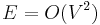
, mit E als Anzahl der Kanten und V als Anzahl der Knoten) effizient ist. Bei gewichteten Graphen gibt das Matrixelement aij das Gewicht der Kante i ⇒ j (wobei aij = 0 gesetzt wird, wenn diese Kante nicht existiert). Wie zuvor gilt für ungerichtete Graphen aij = aji (symmetrische Matrix), während dies für gerichtete Graphen nicht gelten muss.Bei Graphen in Adjazenzlistendarstellung hat es sich bewährt, die Gewichte in einer property map zu speichern. Weiter oben haben wir bereits property maps für Knoteneigenschaften (z.B. visited und anchors) gesehen. Property maps für Kanten funktionieren ganz analog, allerdings muss man jetzt Paare von Knoten (nämlich Anfangs- und Endknoten der Kante) als Schlüssel verwenden und die Daten entsprechend in einem assoziativen Array ablegen:
w = weights[(i,j)] # Zugriff auf das Gewicht der Kante i ⇒ j
Alternativ könnte man auch die Graph-Datenstruktur selbst erweitern, aber dies ist weniger zu empfehlen, weil jeder Algorithmus andere Erwiterungen benötigt und damit die Datenstruktur sehr unübersichtlich würde.
Der kürzeste Weg ist nun definiert als der Weg, bei dem die Summe der Kantengewichte minimal ist:
- Definition - Problem des kürzesten Weges
- Sei P die Menge aller Wege von u nach v, und
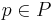
einer dieser Wege. Wenn der Grpah einfach ist (es also keine Mehrfachkanten zwischen denselben Knoten und keine Schleifen gibt), ist der Weg p durch die Folge der besuchten Knoten eindeutig bestimmt: -
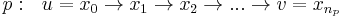
- wo
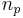
die Anzahl der Kanten im Weg p ist. Seine Kosten Wp ergeben sich als Summer der Gewichte der einzelnen Kanten -
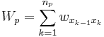
- und ein kürzester Weg
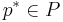
ist ein Weg mit minimalen Kosten -
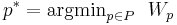
- Das Problem des kürzesten Weges besteht darin, einen optimalen Weg p* zwischen gegebenen Knoten u und v zu finden.
Die Lösung dieses Problems hängt davon ab, ob alle Kantengewichte positiv sind, oder ob es auch negative Kantengewichte gibt. In letzeren Fall ist es möglich, durch eine Verlängerung des Weges die Kosten zu redizieren, während sich im ersteren Fall die Kosten immer erhöhen, wenn man den Weg verlängert.
Negative Gewichte treten z.B. bei den Währungsgraphen auf. Auf den ersten Blick entsprechen diese Graphen nicht den Anforderungen an das Problem des kürzesten Weges, weil Wechselkurse miteinander (und mit Geldbeträgen) multipliziert anstatt addiert werden. Man beseitigt diese Schwierigkeit aber leicht, indem man die Logarithmen der Wechselkurse als Kantengewichte verwendet, wodurch sich die Multiplikation in eine Addition der Logarithmen verwandelt. Wechselkurse < 1 führen nun zu negativen Gewichten.
Interessant werden negative Gewichte vor allem in Graphen mit Zyklen. Dann kann es nämlich passieren, dass die Gesamtkosten eines Zyklus ebenfalls negativ sind. Jeder Weg, der den Zyklus enthält, hat dann Kosten von  , weil man den Zyklus beliebig oft durchlaufen und dadurch die Gesamtkosten immer weiter verkleinern kann:
, weil man den Zyklus beliebig oft durchlaufen und dadurch die Gesamtkosten immer weiter verkleinern kann:
/\ 1. Durchlauf: Kosten -1
1 / \ -4 2. Durchlauf: Kosten -2
/____\ etc.
2
Um hier nicht in einer Endlosschleife zu landen, benötigt man spezielle Algorithmen, die mit dieser Situation umgehen können. Der Algorithmus von Bellmann und Ford beispielsweise bricht die Suche nach dem kürzesten Weg ab, sobald er einen negativen Zyklus entdeckt, aber andernfalls kann er negative Gewichte problemlos verarbeiten.
Die Detektion negativer Zyklen hat wiederum eine interessante Anwendung bei Währungsgraphen: Ein Zyklus bedeutet hier, dass man Geld über mehrere Stufen von einer Währung in die nächste und am Schluß wieder in die Originalwährung umtauscht, und ein negativer Zyklus führt dazu, dass man am Ende mehr Geld besitzt als am Anfang (damit negative Zyklen wirklich einen Gewinn bedeuten und keinen Verlust, müssen die Wechselkurse vor der Logarithmierung in Preisnotierung angegeben sein). Bei Privatpersonen ist dies ausgeschlossen, weil die Umtauschgebühren den möglichen Gewinn mehr als aufzehren. Banken mit direktem weltweitem Börsenzugang hingegen unternehmen große Anstrengungen, um solche negativen Zyklen möglichst schnell (nämlich vor der Konkurrenz) zu entdecken und auszunutzen. Diese Geschäftsmethode bezeichnet man als Arbitrage und die Existenz eines negativen Zyklus als Arbitragegelegenheit. Durch die Kursschwankungen (und durch die ausgleichende Wirkung der Arbitragegeschäfte selbst) existieren die Arbitragegelegenheiten nur für kurze Zeit, und ihre Detektion erfordert leistungsfähige Echtzeitalgorithmen.
In dieser Vorlesung beschränken wir uns hingegen auf Graphen mit ausschließlich positiven Gewichten. In diesem Fall ist der Algorithmus von Dijkstra die Methode der Wahl, weil er wesentlich schneller arbeitet als der Bellmann-Ford-Algorithmus.
Algorithmus von Dijkstra
Edsger Wybe Dijkstra
geb. 11. Mai 1930 in Rotterdam
ges. 06. August 2002
Dijkstra war ein niederländischer Informatiker und Wegbereiter der strukturierten Programmierung. 1972 erhielt er für seine Leistung in der Technik und Kunst der Programmiersprachen den Turing Award, der jährlich von der Association for Computing Machinery (ACM) an Personen verliehen wird, die sich besonders um die Entwicklung der Informatik verdient gemacht haben. Zu seinen Beiträgen zur Informatik gehören unter anderem der Dijkstra-Algorithmus zur Berechnung des kürzesten Weges in einem Graphen sowie eine Abhandlung über den go-to-Befehl und warum er nicht benutzt werden sollte. Der go-to-Befehl war in den 60er und 70er Jahren weit verbreitet, führte aber zu Spaghetti-Code. In seinem berühmten Paper "A Case against the GO TO Statement"[2], das als Brief mit dem Titel "Go-to statement considered harmful" veröffentlicht wurde, argumentiert Dijkstra, dass es umso schwieriger ist, dem Quellcode eines Programmes zu folgen, je mehr go-to-Befehle darin enthalten sind und zeigt, dass man auch ohne diesen Befehl gute Programme schreiben kann.
Algorithmus
Der Dijkstra-Algorithmus für kürzeste Wege ist dem oben vorgestellten Algorithmus shortestPath() auf der Basis von Breitensuche sehr ähnlich. Insbesondere gilt auch hier, dass neben dem kürzesten Weg vom Start zum Ziel auch alle kürzesten Wege gefunden werden, deren Endknoten dem Start näher sind als der Zielknoten. Aufgrund der Kantengewichte gibt es aber einen wichtigen Unterschied: Der erste gefundene Weg zu einem Knoten ist nicht mehr notwendigerweise der kürzeste. Wir bestimmen deshalb für jeden Knoten mehrere Kandidatenwege und verwenden eine Prioritätswarteschlange (statt einer einfachen First in - First out - Queue), um diese Wege nach ihrer Länge zu sortieren. Die Kandidatenwege für einen gegebenen Knoten werden unterschieden, indem wir auch den Vorgängerknoten im jeweiligen Weg speichern. Wenn ein Knoten erstmals an die Spitze der Prioritätswarteschlange gelangt, haben wir den kürzesten Weg zu diesem Knoten gefunden (das wird weiter unten formal bewiesen), und der Vorgänger des Knotens in diesem Weg wird zu seinem Vaterknoten. Erscheint derselbe Knoten später nochmals an der Spitze der Prioritätswarteschlange, handelt es sich um einen Kandidatenweg, der sich nicht als kürzester erwiesen hat und deshalb ignoriert werden kann. Wir erkennen dies leicht daran, dass der Vaterknoten in der property map parents bereits gesetzt ist.
Eine geeignete Datenstruktur für die Prioritätswarteschlange wird durch das Python-Modul heapq realisiert. Es verwendet ein normales Pythonarray als unterliegende Repräsentation für einen Heap und stellt effiziente heappush und heappop-Funktionen zur Verfügung. Dies entspricht genau unserer Vorgehensweise im Kapitel Prioritätswarteschlangen. Als Datenelement erwartet die Funktion heappush ein Tupel, dessen erstes Element die Priorität sein muss. Die übrigen Elemente des Tupels (und damit auch deren Anzahl) können je nach Anwendung frei festgelegt werden. Wir legen fest, dass das zweite Element den Endknoten des betrachteten Weges und das dritte den Vorgängerknoten speichert.
Die Kantengewichte werden dem Algorithmus in der property map weights übergeben:
import heapq # heapq implementiert die Funktionen für Heaps
def dijkstra(graph, weights, startnode, destination):
parents = [None]*len(graph) # registriere für jeden Knoten den Vaterknoten im Pfadbaum
q = [] # Array q wird als Heap verwendet
heapq.heappush(q, (0.0, startnode, startnode)) # Startknoten in Heap einfügen
while len(q) > 0: # solange es noch Knoten im Heap gibt:
length, node, predecessor = heapq.heappop(q) # Knoten aus dem Heap nehmen
if parents[node] is not None: # parent ist schon gesetzt => es gab einen anderen, kürzeren Weg
continue # => wir können diesen Weg ignorieren
parents[node] = predecessor # parent setzen
if node == destination: # Zielknoten erreicht
break # => Suche beenden
for neighbor in graph[node]: # die Nachbarn von node besuchen,
if parents[neighbor] is None: # aber nur, wenn ihr kürzester Weg noch nicht bekannt ist
newLength = length + weights[(node,neighbor)] # berechne Pfadlänge zu neighbor
heapq.heappush(q, (newLength, neighbor, node)) # und füge neighbor in den Heap ein
if parents[destination] is None: # Suche wurde beendet ohne den Zielknoten zu besuchen
return None, None # => kein Pfad gefunden (unzusammenhängender Graph)
# Pfad durch die parents-Kette zurückverfolgen und speichern
path = [destination]
while path[-1] != startnode:
path.append(parents[path[-1]])
path.reverse() # Reihenfolge umdrehen (Ziel => Start wird zu Start => Ziel)
return path, length # gefundenen Pfad und dessen Länge zurückgeben
Die wesentlichen Unterschiede zur Breitensuche sind im Code rot markiert: Anstelle der Queue verwenden wir jetzt einen Heap, und der Startknoten wird mit Pfadlänge 0 als erstes eingefügt. In der Schleife while len(q) > 0: wird jeweils der Knoten node mit der aktuell kürzesten Pfadlänge aus dem Heap entfernt. Die Pfadlänge vom Start zu diesem Knoten wird in der Variable length gespeichert, sein Vorgänger in der Variable predecessor. Wenn der aktuelle Weg nicht der kürzeste ist (parents[node] war bereits gesetzt), wird dieser Weg ignoriert. Andernfalls werden die property map parents aktualisiert und die Nachbarn von node besucht. Beim Scannen der Nachbarn berechnen wir zunächst die Länge newLength das Weges startnode => node => neighbor als Summe von length und dem Gewicht der Kante (node, neighbode). Diese Länge wird beim Einfügen des Nachbarknotens in den Heap zur Priorität des aktuellen Weges.
Die wichtigsten Prinzipien des Dijkstra-Algorithmus noch einmal im Überblick:
- Der Dijkstra-Algorithmus ist Breitensuche mit Prioritätswarteschlange (Heap) statt einer einfache Warteschlange (Queue).
- Die Prioritätswarteschlange speichert alle Wege, die bereits gefunden worden sind und ordnet sie aufsteigend nach ihrer Länge.
- Das Sortieren (und damit der ganze Algorithmus) funktioniert nur mit positiven Kantengewichten korrekt.
- Da ein Knoten auf mehreren Wegen erreichbar sein kann, kann er auch mehrmals im Heap sein.
- Wenn ein Knoten erstmals aus der Prioritätswarteschlange entnommen wird, ist der gefundene Weg der kürzeste zu diesem Knoten. Andernfalls wird der Weg ignoriert.
- Wenn der Knoten destination aus dem Heap entnommen wird, ist der kürzeste Weg von Start nach Ziel gefunden, und die Suche kann beendet werden.
In unserer Implementation können, wie gesagt, mehrere Wege zum selben Knoten gleichzeitig in der Prioritätswarteschlange sein. Im Prinzip wäre es auch möglich, immer nur den besten zur Zeit bekannten Weg zu jedem Enknoten in der Prioritätswarteschlange zu halten - sobald ein besserer Kandidat gefunden wird, ersetzt er den bisherigen Kandidaten, anstatt zusätzlich eingefügt zu werden. Dies erfordert aber eine wesentlich kompliziertere Prioritätswarteschlange, die eine effiziente updatePriority-Funktion anbietet, ohne dass dadurch eine signifikante Beschleunigung erreicht wird. Deshalb verfolgen wir diesen Ansatz nicht.
Beispiel
under construction

Komplexität von Dijkstra
Zur Analyse der Komplexität nehmen wir an, dass der Graph V Knoten und E Kanten hat. Die Initialisierung der property map parents am Anfang der Funktion hat offensichtlich Komplexität O(V), weil Speicher für V Knoten allokiert wird. Der Code am Ende der Funktion, der aus der property map parents den Pfad extrahiert, hat ebenfalls die Komplexität O(V), weil der Pfad im ungünstigen Fall sämtliche Knoten des Graphen umfasst. Beides wird durch die Komplexität der Hauptschleife dominiert, zu deren Analyse wir den folgenden Codeausschnitt genauer anschauen wollen:
while len(q) > 0:
... # 1
if parents[node] is not None:
continue
parents[node] = predecessor
... # 2
Wir erkennen, dass der Codeabschnitt # 2 für jeden Knoten höchstens einmal erreicht werden kann: Da parents[node] beim ersten Durchlauf gesetzt wird, kann die if-Abfrage beim gleichen Knoten nie wieder False liefern, und das nachfolgende continue bewirkt, dass der Abschnitt # 2 dann übersprungen wird. Man sagt auch, dass jeder Knoten höchstens einmal expandiert wird, auch wenn er mehrmals im Heap war.
Der Codeabschnitt # 2 selbst enthält eine Schleife über alle ausgehenden Kanten des Knotens node. Im ungünstigsten Fall iterieren wir bei allen Knoten über alle ausgehenden Kanten, aber das sind gerade alle Kanten des Graphen je einmal in den beiden möglichen Richtungen. Die Funktion heappush wird sogar höchstens E Mal aufgerufen, weil eine Kante nur in den Heap eingefügt wird, wenn der kürzeste Weg der jeweiligen Endknotens noch nicht bekannt ist (siehe die if-Abfrage in der for-Schleife), und das ist nur ein einer Richtung möglich. Dies hat zwei Konsequenzen:
- Die Schleife while len(q) > 0: wird nur so oft ausgeführt, wie Elemente im Heap sind, also höchstens E Mal. Das gleiche gilt für den Codeabschnitt # 1, der das heappop enthält.
- Die Operationen heappush und heappop haben logarithmische Komplexität in der Größe des Heaps, sind also in
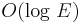
. In einfachen Graphen gilt aber , so dass sich die Komplexität der Heapoperationen vereinfacht zu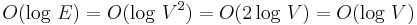
.
Zusammenfassend gilt: heappush und heappop werden maximal E Mal aufgerufen und haben eine Komplexität in
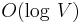
. Folglich hat der Algorithmus von Dijkstra die Komplexität: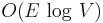
Vergleich mit Breitensuche und Tiefensuche
Der Dijkstra-Algorithmus ist eng mit der Breiten- und Tiefensuche verwandt - man kann diese Algorithmen aus dem Dijkstra-Algorithmus gewinnen, indem man einfach die Regel zur Festlegung der Prioritäten ändert. Anstelle der Länge des Pfades verwenden wir als Priorität den Wert eine Zählvariable count, die nach jeder Einfügung in den Heap (also nach jedem Aufruf von heappush) aktualisiert wird. Zählen wir die Variable hoch, haben die zuerst eingefügten Kanten die höchste Priorität, der Heap verhält sich also wie eine Queue (First in-First out), und wir erhalten eine Breitensuche. Zählen wir die Variable hingegen (von E beginnend) herunter, haben die zuletzt eingefügten Kanten höchste Priorität. Der Heap verhält sich dann wie ein Stack (Last in-First out), und wir bekommen Tiefensuche. Statt eines Heaps plus Zählvariable kann man jetzt natürlich direkt eine Queue bzw. einen Stack verwenden. Dadurch fällt der Aufwand für die Heapoperationen weg und wird durch die effizienten O(1)-Operationen von Queue bzw. Stack ersetzt. Damit erhalten wir für Breiten- und Tiefensuche die schon bekannte Komplexität O(E).
Korrektheit von Dijkstra
Wir beweisen zunächst eine wichtige Eigenschaft des Algorithmus: Die Priorität (=Pfadlänge) des Knotens an der Spitze des Heaps wächst im Laufe des Algorithmus monoton an (aber nicht notwendigerweise streng monoton). Mit anderen Worten: liefert heappop in der i-ten Iteration der while-Schleife den Knoten u mit der Pfadlänge lu, und in der (i+1)-ten Iteration den Knoten v mit der Pfadlänge lv, so gilt stets lv ≥ lu. Wir zeigen dies mit der Technik des indirekten Beweises, d.h. wir nehmen das Gegenteil an und führen diese Annahme zum Widerspruch. Wäre also lv < lu, gäbe es zwei Möglichkeiten:
- Der Weg nach v mit der Länge lv war in der i-ten Iteration schon bekannt und somit bereits im Heap enthalten. Dann hätte heappop in dieser Iteration aber v zurückgegeben, im Widerspruch zur Annahme, dass u zurückgegeben wurde.
- Der Weg wurde erst bei der Expansion von u in der i-ten Iteration gefunden. Dann muss v ein Nachbar von u sein, und seine Weglänge berechnet sich als lv = lu + wu,v. Da für die Kantengewichte aber wu,v ≥ 0 gefordert ist, kann lv < lu nicht gelten.
Diese Monotonieeigenschaft hat eine interessante Konsequenz: Beträgt der Abstand vom Start zum Zielknoten lz, so findet Dijsktra's Algorithmus als Nebenprodukt auch die kürzesten Wege zu allen näher gelegenen Knoten, also zu allen Knoten u, für deren Abstand lu < lz gilt. Dies trifft auch dann zu, wenn diese Wege für den Benutzer gar nicht von Interesse sind. Der A*-Algorithmus, der weiter unten erklärt wird, versucht dem abzuhelfen.
Wir können nun mittels vollständiger Induktion die folgende Schleifen-Invariante beweisen: Falls parents[node] gesetzt (also ungleich None) ist, dann liefert das Zurückverfolgen des Weges von node nach startnode den kürzesten Weg.
- Induktionsanfang
- parents[startnode] ist als einziges gesetzt. Zurückverfolgen liefert den trivialen Weg [startnode], der mit Länge 0 offensichtlich der kürzeste Pfad ist → die Bedingung ist erfüllt.
- Induktionsschritt
- Wir zeigen wieder mit einem indirektem Beweis, dass wir immer einen kürzesten Weg bekommen, wenn parents[node] gesetzt wird.
- Sei
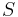
= {v | parents[v] is not None} die Menge aller Knoten, von denen wir den kürzesten Weg schon kennen (Induktionsvoraussetzung), und node der Knoten, der sich gerade an der Spitze des Heaps befindet. Dann ist predecessor der Vorgänger von node im aktuellen Weg, und es muss predecessor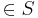
gelten, weil die Nachbarn von predecessor (und damit auch der aktuelle node) erst in dem Momemnt in den Heap eingefügt werden, wo der kürzeste Weg für predecessor gefunden wurde. Man beachte auch, dass wegen der Monotonieeigenschaft alle Knoten, die noch nicht in enthalten sind, weiter vom Start entfernt sind als die Knoten in . - Der indirekte Beweis nimmt jetzt an, dass der Weg node → predecessor → startnode nicht der kürzeste Weg ist. Dann muss es einen anderen, kürzeren Weg node → x → startnode geben. Für den Vorgänger x in diesem Weg unterscheiden wir zwei Fälle:
- x: In diesem Fall ist die Länge des Weges node → x → startnode bereits bekannt, und dieser Weg ist im Heap enthalten. Dann kann er aber nicht der kürzeste sein, denn an der Spitze der Warteschlange war nach Voraussetzung der Weg node → predecessor → startnode.
- x
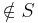
: Wegen der Monotonieeigenschaft muss jetzt Kosten(x → startnode) > Kosten(node → predecessor → startnode) gelten. Die Kosten des Weges node → x → startnode berechnen sich aber als Kosten(x → startnode) + weight[(x, node)], und deshalb kann dieser Weg keinesfalls kürzer sein.
In beiden Fällen erhalten wir einen Widerspruch, und die Behauptung ist somit bewiesen. Da die Invariante insbesondere für den Weg zum Zielknoten destination erfüllt ist, folgt daraus auch die Korrektheit des Algorithmus von Dijkstra.
A*-Algorithmus - Wie kann man Dijkstra noch verbessern?
Eine wichtige Eigenschaft des Dijkstra-Algorithmus ist, dass neben dem kürzesten Weg vom Start zum Ziel auch die kürzesten Wege zu allen Knoten berechnet werden, die näher am Startknoten liegen als das Ziel, obwohl uns diese Wege gar nicht interessieren. Sucht man beispielsweise in einem Graphen mit den Straßenverbindungen in Deutschland den kürzesten Weg von Frankfurt (Main) nach Dresden (ca. 460 km), werden auch die kürzesten Wege von Frankfurt nach Köln (190 km), Dortmund (220 km) und Stuttgart (210 km) und vielen anderen Städten gefunden. Aufgrund der geographischen Lage dieser Städte ist eigentlich von vornherein klar, dass sie mit dem kürzesten Weg nach Dresden nicht das geringste zu tun haben. Anders sieht es mit Erfurt (260 km) oder Suhl (210 km) aus - diese Städte liegen zwischen Frankfurt und Dresden und kommen deshalb als Zwischenstationen des gesuchten Weges in Frage.
Damit Dijkstra korrekt funktioniert, würde es im Prinzip ausreichen, wenn man die kürzesten Wege nur für diejenigen Knoten ausrechnet, die auf dem kürzesten Weg vom Start zum Ziel liegen, denn nur diese Knoten braucht man, um den gesuchten Weg über die parent-Kette zurückzuverfolgen. Das Problem ist nur, dass man diese Knoten erst kennt, wenn der Algorithmus fertig durchgelaufen ist. Schließt man Knoten zu früh von der Betrachtung aus, kommt am Ende möglicherweise nicht der korrekte kürzeste Weg heraus.
Der A*-Algorithmus löst dieses Dilemma mit folgender Idee: Ändere die Prioritäten für den Heap so ab, dass unwichtige Knoten nur mit geringerer Wahscheinlichkeit expandiert werden, aber stelle gleichzeitig sicher, dass alle wichtigen Knoten (also diejenigen auf dem korrekten kürzesten Weg) auf jeden Fall expandiert werden. Es zeigt sich, dass man diese Idee umsetzen kann, wenn eine Schätzung für den Restweg (also für die noch verbleibende Entfernung von jedem Knoten zum Ziel) verfügbar ist:
rest = guess(neighbor, destination)
Diese Schätzung addiert man einfach zur wahren Länge des Weges startnode → node dazu, um die verbesserte Priorität zu erhalten:
priority = newLength + guess(neighbor, destination)
(Im originalen Dijkstra-Algorithmus wird als Priorität nur newLength allein verwendet. Man beachte, dass man newLength jetzt zusätzlich im Heap speichern muss, weil man es für die Expansion des Knotens später noch benötigt.)
Damit sicher gestellt ist, dass der A*-Algorithmus immer noch die korrekten kürzesten Wege findet, darf die Schätzung den wahren Restweg niemals überschätzen. Es muss immer gelten:
0 <= guess(node, destination) <= trueDistance(node, destination)
Damit gilt insbesondere guess(destination, destination) = trueDistance(destination, destination) = 0, an der Priorität des Knotens destination ändert sich also nichts. Die Prioritäten aller anderen Knoten veschlechtern sich hingegen, weil zur bisherigen Priorität noch atwas addiert wird. Für die wichtigen Knoten auf dem kürzesten Weg vom Start nach Ziel gilt jedoch, dass deren neue Priorität immer noch besser ist als die Priorität des Zielknotens selbst. Für diese Knoten gilt nämlich
falls node auf dem kürzesten Weg von startnode nach destination liegt: trueDistance(startnode, node) + guess(node, destination) <= trueDistance(startnode, destination)
weil der Weg von Start nach node ein Teil des kürzesten Wegs von Start nach Ziel ist und die Restschätzung die wahre Entfernung immer unterschätzt. Diese Knoten werden deshalb stets vor dem Zielknoten expandiert, so dass wir die parent-Kette immer noch korrekt zurückverfolgen können. Für alle anderen Knoten gilt idealerweise, dass die neue Priorität schlechter ist als die Priorität von destination, so dass man sich diese irrelevanten Knotenexpansionen sparen kann.
Für das Beispiel eines Straßennetzwerks bietet sich als Schätzung die Luftlinienentfernung an, weil Straßen nie kürzer sein können als die Luftlinie. Damit erreicht man in der Praxis deutliche Einsparungen. Generell gilt, dass der A*-Algorithmus im typischen Fall schneller ist als der Algorithmus von Dijkstra, aber man kann immer pathologische Fälle konstruieren, wo die Änderung der Prioritäten nichts bringt. Die Komplexität des A*-Algorithmus im ungünstigen Fall ist deshalb nach wie vor .
Minimaler Spannbaum
(engl.: minimum spanning tree; abgekürzt: MST)

- gegeben: gewichteter Graph G, zusammenhängend
- gesucht: Untermenge
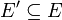
der Kanten, so dass die Summe der Kantengewichte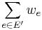
minimal und der entstehende Graph G' zusammenhängend ist.
- G' definiert immer einen Baum, denn andernfalls könnte man eine Kante weglassen und dadurch die Summe verringern, ohne dass sich am Zusammenhang von G' etwas ändert.
- Wenn der Graph G nicht zusammenhängend ist, kann man den Spannbaum für jede Zusammenhangskomponente getrennt ausrechnen. Man erhält dann einen aufspannenden Wald.
- Der MST ist ähnlich wie der Dijkstra-Algorithmus: Dort ist ein Pfad gesucht, bei dem die Summe der Gewichte über den Pfad minimal ist. Beim MST suchen wir eine Lösung, bei der die Summe der Gewichte über den ganzen Graphen minimal ist.
- Das Problem des MST ist nahe verwandt mit der Bestimmung der Zusammenhangskomponente, z.B. über den Tiefensuchbaum. Für die Zusammenhangskomponenten genügt allerdings ein beliebiger Baum, während beim MST ein minimaler Baum gesucht ist.
Anwendungen
Wie verbindet man n gegebene Punkte mit möglichst kurzen Straßen (Eisenbahnen, Drähten [bei Schaltungen] usw.)?
| MST minimale Verbindung (Abb.1) | MST = 2 (Länge = Kantengewicht)(Abb.2) |
| 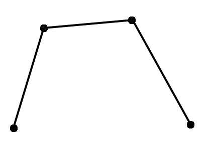 |
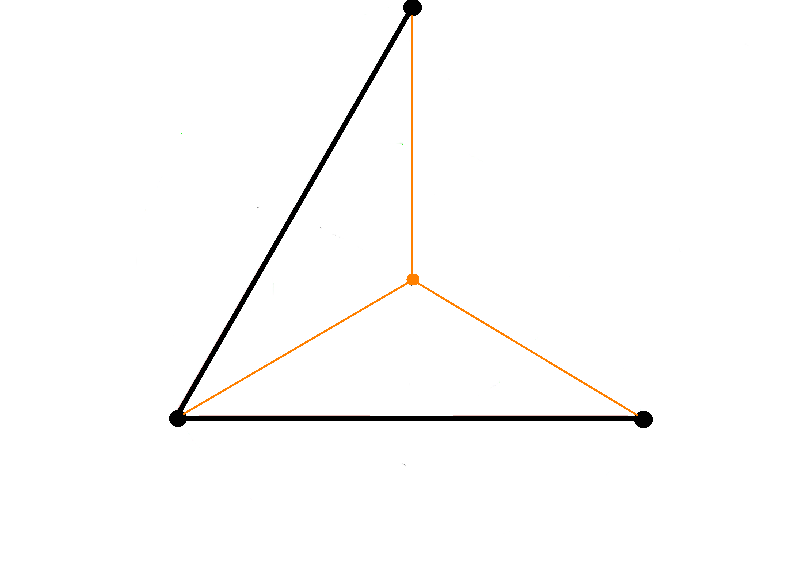 |
- In der Praxis: Die Festlegung, dass man nur die gegebenen Punkte verwenden darf, ist eine ziemliche starke Einschränkung.
- Wenn man sich vorstellt, es sind drei Punkte gegeben, die als gleichseitiges Dreieck angeordnet sind, dann ist der MST (siehe Abb.2, schwarz gezeichnet) und hat die Länge 2. Man kann hier die Länge als Kantengewicht verwenden.
- Wenn es erlaubt ist zusätzliche Punkte einzufügen, dann kann man in der Mitte einen neuen Punkt setzen
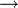
neuer MST (siehe Abb.2, orange gezeichnet).
- Höhe =
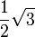
, Schwerpunkt: teilt die Höhe des Dreiecks im Verhältnis 2:1; der Abstand von obersten Punkt bis zum neu eingeführten Punkt: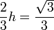
, davon insgesamt 3 Stück, damit (gilt für den MST in orange eingezeichnet): MST =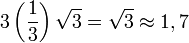
<br\>
- Damit ist der MST in orange kürzer als der schwarz gezeichnete MST. <br\>
Folgerung: MST kann kürzer werden, wenn man einen Punkt dazu nimmt.
- Umgekehrt kann der MST auch kürzer werden, wenn man einen Punkt aus dem Graphen entfernt, aber wie das Beipiel des gleichseitigen Dreiecks zeigt, ist dies nicht immer der Fall.

- Methode der zusätzlichen Punkteinfügung hat man früher beim Bahnstreckenbau verwendet. Durch Einführung eines Knotenpunktes kann die Streckenlänge verkürzt werden (Dreiecksungleichung).
Bestimmung von Datenclustern
- Daten (in der Abb.: Punkte) bilden Gruppen.
- In der Abbildung hat man 2 verschiedene Messungen gemacht (als x- und y-Achse aufgetragen), bspw. Größe und Gewicht von Personen. Für jede Person i wird ein Punkt an der Koordinate (Größei, Gewichti) gezeichnet (siehe Bild a). Dies bezeichnet man als Scatter Plot. Wenn bestimmte Wertkombinationen häufiger auftreten als andere, bilden sich mitunter Gruppen aus, bspw. eine Gruppe für "klein und schwer" etc.
- Durch Verbinden der Punkte mittels eines MST (siehe Abbildung (b)) sieht man, dass es kurze (innerhalb der Gruppen) und lange Kanten (zwischen den Gruppen) gibt.
- Wenn man geschickt eine Schwelle einführt und alle Kanten löscht, die länger sind als die Schwelle, dann bekommt man als Zusammenhangskomponente die einzelnen Gruppen.
Algorithmen
Genau wie bei der Bestimmung von Zusammenhangskomponenten kann man auch das MST-Problem entweder nach dem Anlagerungsprinzip oder nach dem Verschmelzungsprinzip lösen (dazu gibt es noch weitere Möglichkeiten, z.B. den Algorithmus von Boruvka). Der Anlagerungsalgorithmus für MST wurde zuerst von Prim beschrieben und trägt deshalb seinen Namen, der Verschmelzungsalgorithmus stammt von Kruskal. Im Vergleich zu den Algorithmen für Zusammenhangskomponenten ändert sich im wesentlichen nur die Reihenfolge, in der die Kanten betrachtet werden: Eine Prioritätswarteschlange stellt jetzt sicher, dass am Ende wirklich der Baum mit den geringstmöglichen Kosten herauskommt.
Algorithmus von Prim
Der Algorithmus von Prim geht nach dem Anlagerungsprinzip vor (vgl. den Abschnitt Zusammenhangskomponenten mit Tiefensuche): Starte an der Wurzel (ein willkürlich gewählter Knoten) und füge jeweils die günstigste Kante an die aktuellen Teillösung an, die keinen Zyklus verursacht. Die Sortierung der Kanten nach Priorität erfolgt analog zum Dijsktra-Algorithmus, aber die Definitionen, welche Kante die günstigste ist, unterscheiden sich. Die Konvention für die Bedeutung der Elemente des Heaps ist ebenfalls identisch: ein Tupel mit (priority, node, predecessor). Die folgende Implementation verdeutlicht sehr schön die Ähnlichkeit der beiden Algorithmen. Das Ergebnis wird als property map parents zurückgegeben, in der für jeden Knoten sein Vorgänger im MST steht, wobei die Wurzel wie üblich auf sich selbst verweist.
import heapq
def prim(graph, weights): # Kantengewichte wie bei Dijkstra als property map
sum = 0.0 # wird später das Gewicht des Spannbaums sein
start = 0 # Knoten 0 wird willkürlich als Wurzel gewählt
parents = [None]*len(graph) # property map, die den resultierenden Baum kodiert
parents[start] = start # Wurzel zeigt auf sich selbst
heap = [] # Heap für die Kanten des Graphen
for neighbor in graph[start]: # besuche die Nachbarn von start
heapq.heappush(heap, (weights[(start, neighbor)], neighbor, start)) # und fülle Heap
while len(heap) > 0:
w, node, predecessor = heapq.heappop(heap) # hole billigste Kante aus dem Heap
if parents[node] is not None: # die Kante würde einen Zyklus verursachen
continue # => ignoriere diese Kante
parents[node] = predecessor # füge Kante in den MST ein
sum += w # und aktualisiere das Gesamtgewicht
for neighbor in graph[node]: # besuche die Nachbarn von node
if parents[neighbor] is None: # aber nur, wenn kein Zyklus entsteht
heapq.heappush(heap, (weights[(node,neighbor)], neighbor, node)) # füge Kandidaten in Heap ein
return parents, sum # MST und Gesamtgewicht zurückgeben
Algorithmus von Kruskal
Die alternative Vorgehensweise ist das Verschmelzungsprinzip (vgl. den Abschnitt Zusammenhangskomponenten mit Union-Find-Algorithmus), das der Algorithmus von Kruskal verwendet. Jeder Knoten wird zunächst als trivialer Baum mit nur einem Knoten betrachtet, und alle Kanten werden aufsteigend nach Gewicht sortiert. Dann wird die billigste noch nicht betrachtete Kante in den MST eingefügt, falls sich dadurch kein Zyklus bildet (erkennbar daran, dass die Endknoten in verschiedenen Zusammenhangskomponenten liegen, das heisst verschiedene Anker haben). Da der fertige Baum (V-1) Kanten haben muss, wird dies (V-1) Mal zutreffen. Andernfalls wird diese Kante ignoriert. Anders ausgedrückt: Der Algorithmus beginnt mit V Bäumen; in (V-1) Verschmelzungsschritten kombiniert er jeweils zwei Bäume (unter Verwendung der kürzesten möglichen Kante), bis nur noch ein Baum übrig bleibt. Der einzige Unterschied zum einfachen Union-Find besteht darin, dass die Kanten in aufsteigender Reihenfolge betrachtet werden müssen, was wir hier durch eine Prioritätswarteschlange realisieren. Der Algorithmus von J.Kruskal ist seit 1956 bekannt.
def kruskal(graph, weights):
anchors = range(len(graph)) # Initialisierung der property map: jeder Knoten ist sein eigener Anker
results = [] # result wird später die Kanten des MST enthalten
heap = [] # Heap zum Sortieren der Kanten nach Gewicht
for edge, w in weights.iteritems(): # alle Kanten einfügen
heapq.heappush(heap, (w, edge))
while len(heap) > 0: # solange noch Kanten vorhanden sind
w, edge = heapq.heappop(heap) # billigste Kante aus dem Heap nehmen
a1 = findAnchor(anchors, edge[0]) # Anker von Startknoten der Kante
a2 = findAnchor(anchors, edge[1]) # ... und Endknoten bestimmen
if a1 != a2: # wenn die Knoten in verschiedenen Komponenten sind
anchors[a2] = a1 # Komponenten verschmelzen
result.append(edge) # ... und Kante in MST einfügen
return result # Kanten des MST zurückgeben
Die Funktion findAnchor() wurde im Abschnitt Zusammenhangskomponenten mit Union-Find-Algorithmus implementiert. Im Unterschied zum Algorithmus von Prim geben wir hier nicht die property map parents zurück, sondern einfach eine Liste der Kanten im MST.
Der Algorithmus eignet sich insbesondere für das Clusteringproblem, da der Schwellwert von vornerein als maximales Kantengewicht an den Algorithmus übergeben werden kann. Man hört mit dem Vereinigen auf, wenn das Gewicht der billigste Kante im Heap den Schwellwert überschreitet. Beim Algorithmus von Kruskal kann dann keine bessere Kante als der Schwellwert mehr kommen, da die Kanten vorher sortiert worden sind.
Komplexität: wie beim Dijkstra-Algorithmus, weil jede Kante genau einmal in den Heap kommt. Der Aufwand für das Sortieren ist somit
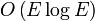
, was sich zu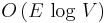
reduziert, falls keine Mehrfachkanten vorhanden sind.=> geeignet für Übungsaufgabe
Verwendung einer BucketPriorityQueue
Beide Algorithmen zur Bestimmung des minimalen Spannbaums benötigen eine Prioritätswarteschlange. Wenn die Kantengewichte ganze Zahlen im Bereich 0...(m-1) sind, kann man die MST-Algorithmen deutlich beschleunigen, wenn man anstelle des Heaps eine BucketPriorityQueue verwendet. Die Operationen zum Einfügen einer Kante in die Queue und zum Entfernen der billibsten Kante aus der Queue beschleunigen sich dadurch auf O(1) statt O(log V) (außer wenn die Gewichte sehr ungünstig auf die Kanten verteilt sind). In der Praxis erreicht man durch diese Änderung typischerweise deutliche Verbesserungen. In der Bildverarbeitung können die Prioritäten beispielsweise die Wahrscheinlichkeit kodieren, dass zwei benachbarte Pixel zu verschiedenen Objekten gehören. Bildet man jetzt den MST, und bricht bei einer bestimmten Wahrscheinlichkeit ab, erhält man Cluster von Pixeln, die wahrscheinlich zum selben Objekt gehören (weil der MST ja die Kanten mit minimalem Gewicht bevorzugt, und kleine Gewichte bedeuten kleine Wahrscheinlichkeit, dass benachbarte Pixel von einander getrennt werden). Da man die Wahrscheinlichkeiten nur mit einer Genauigkeit von ca. 1% berechnen kann, reichen hiefür 100 bis 200 Quantisierungstufen aus. Durch Verwendung der schnellen BucketPriorityQueue kann man jetzt wesentlich größere Bilder in akzeptabler Zeit bearbeiten als dies mit einem Heap möglich wäre.
Algorithmen für gerichtete Graphen
Zur Erinnerung: in einem gerichteten Graphen sind die Kanten (i → j) und (j → i) voneinander verschieden, und eventuell existiert nur eine der beiden Richtungen. Im allgemeinen unterscheidet sich der transponierte Graph GT also vom Originalgraphen G. Beim Traversieren des Graphen und bei der Pfadsuche dürfen Kanten nur in passender Richtung verwendet werden. Bei gewichteten Graphen tritt häufig der Fall auf, dass zwar Kanten in beiden Richtungen existieren, diese aber unterschiedliche Gewichte haben.
Gerichtete Graphen ergeben sich in natürlicher Weise aus vielen Anwendungsproblemen:
- Routenplanung
- Bei Straßennetzwerken enstehen gerichtete Graphen, sobald es Einbahnstraßen gibt.
- Verwendet man Gewichte, um die erwarteten Fahrzeiten entlang einer Straße zu kodieren, gibt es Asymmetrien z.B. dann, wenn Straßen in einer Richtung bergab, in der anderen bergauf befahren werden. Hier existieren zwar Kanten in beiden Richtungen, sie haben aber unterschiedliche Gewichte. Ähnliches gilt für Flüge: Durch den Gegenwind des Jetstreams braucht man von Frankfurt nach New York länger als umgekehrt von New York nach Frankfurt.
- zeitliche oder kausale Abhängigkeiten
- Wenn die Knoten Ereignisse repräsentieren, von denen einige die Ursache von anderen sind, diese wiederum die Ursache der nächsten usw., verbindet man die Knoten zweckmäßig durch gerichtete Kanten, die die Kausalitätsbeziehungen kodieren. Handelt es sich um logische "wenn-dann"-Regeln, erhält man einen Implikationengraph (siehe unten). Handelt es sich hingegen um Wahrscheinlichkeitsaussagen ("Wenn das Wetter schön ist, haben Studenten tendenziell gute Laune, wenn eine Prüfung bevorsteht eher schlechte usw."), erhält man ein Bayessches Netz.
- Wenn bestimmte Aufgaben erst begonnen werden können, nachdem andere Aufgaben erledigt sind, erhält man einen Abhängigkeitsgraphen. Beispielsweise dürfen Sie erst an der Klausur teilnehmen, nachdem Sie die Übungsaufgaben gelöst haben, und Sie dürfen erst die Abschlussarbeit beginnen, nachdem Sie bestimmte Prüfungen bestanden haben. Ein anderes schönes Beispiel liefern die Regeln für das Ankleiden weiter unten.
- Gerichtete Graphen kodieren die Abhängigkeiten zwischen Programmbibliotheken. Beispielsweise benötigt das Pythonmodul json die internen Submodule json.encoder und json.decode sowie das externe Modul decimal. Die Submodule benötigen wiederum die externen Module re und sys, das Modul decimal braucht copy und collections usw.
- Das Internet kann als gerichteter Graph dargestellt werden, wobei die Webseiten die Knoten, und die Hyperlinks die Kanten sind.
- Sequence Alignment
- Eine gute Rechtschreibprüfung markiert nicht nur fehlerhafte Wörter, sondern macht auch plausible Vorschläge, was eigentlich gemeint gewesen sein könnte. Dazu muss sie das gegebene Wort mit den Wörtern eines Wörterbuchs vergleichen und die Ähnlichkeit bewerten. Ein analoges Problem ergibt sich, wenn man DNA Fragmente mit der Information in einer Genomdatenbank abgleichen will.
Anwendung: Sequence Alignment / Edit Distance
- gegeben: zwei Wörter (allgemein: beliebige Zeichenfolgen)
- gesucht: Wie kann man die Buchstaben am besten in Übereinstimmung bringen?
- Beispiel: WORTE – NORDEN
Zwei mögliche Alignments sind
WORTE. W.ORTE NORDEN NORDEN
wobei der Punkt anzeigt, dass der untere Buchstabe keinen Partner hat, und rote Buchstaben oben und unten übereinstimmen. Jede Nicht-Übereinstimmung verursacht nun gewisse Kosten. Dabei unterscheiden wir zwei Fälle:
- Matche a[i] mit b[j]. Falls a[i] == b[j], ist das gut (rote Buchstaben), und es entstehen keine Kosten. Andernfalls entstehen Kosten U (schwarze Buchstaben).
- Wir überspringen a[i] oder b[j] (Buchstabe vs. Punkt). Dann entstehen Kosten V. (Manchmal unterscheidet man auch noch Kosten Va und Vb, wenn das Überspringen bei a und b unterschieldiche Signifikanz hat.)
Gesucht ist nun das Alignment mit minimalen Kosten
Diese Aufgabe kann man sehr schön als gerichteten Graphen darstellen: Wir definieren ein rechteckiges Gitter und schreiben das erste Wort über das Gitter und das andere links davon. Die Gitterpunkte verbinden wir mit Pfeilen (gerichteten Kanten), wobei ein Pfeil nach rechts bedeutet, dass wir beim oberen Wort einen Buchstaben überspringen, ein Pfeil nach unten, dass wir beim linken Wort einen Buchstaben überspringen, und ein diagonaler Pfeil, dass wir zwei Buchstaben matchen (und zwar die am Pfeilende). Die Farben der Pfeile symbolisieren die Kosten: rot für das Überspringen eines Buchstabens (Kosten V), blau für das Matchen, wenn die Buchstaben nicht übereinstimmen (Kosten U), und grün, wenn die Buchstaben übereinstimmen (keine Kosten).

Lösung:
- Suche den kürzesten Pfad vom Knoten "START" (oben links) nach unten rechts. Dazu kann der Algorithmus von Dijkstra verwendet werden, der auf gerichteten Graphen genauso funktioniert wie auf ungerichteten.
Für unser Beispiel von oben erhalten wir die folgenden Pfade:


Durch Addieren der Kosten entsprechend der Farben sieht man, dass der erste Weg die Kosten 2U+V und der zweite die Kosten 5U+V hat. Der erste Weg ist offensichtlich günstiger und entspricht dem besten Alignment.
Anwendung: Abhängigkeitsgraph
Beispiel: Wie erklärt man einem zerstreuten Professor, wie er sich morgens anziehen soll? Der folgende Graph enthält einen Knoten für jede Aktion, und eine Kante (i → j) bedeutet, dass die Aktion i vor der Aktion j abgeschlossen werden muss.

In derartigen Abhängigkeitsgraphen ist die wichtigste Frage immer, ob der Graph azyklisch ist. Wäre dies nämlich nicht der Fall, kann es keine Reihenfolge der Aktionen geben, die alle Abhängigkeiten erfüllt. Dies sieht man leicht, wenn man den einfachsten möglichen Zyklus betrachtet: es gibt sowohl eine Kante (i → j) als auch eine (j → i). Dann müsste man i vor j erledigen, aber ebenso j vor i, was offensichtlich unmöglich ist - das im Graph kodierte Problem ist dann unlösbar. Wegen ihrer Wichtigkeit wird für gerichtete azyklische Graphen oft die Abkürzung DAG (von directed acyclic graph) verwendet. Ein Graph ist genau dann ein DAG, wenn es eine topologische Sortierung gibt:
- topologische Sortierung
- Zeichne die Knoten so auf eine Gerade, dass alle Kanten (Pfeile) nach rechts zeigen.
Arbeitet man die Aktionen nach einer (beliebigen) topologischen Sortierung ab, werden automatisch alle Abhängigkeiten eingehalten: Da alle Pfeile nach rechts zeigen, werden abhängige Aktionen immer später ausgeführt. Die topologische Sortierung ist im allgemeinen nicht eindeutig. Die folgende Skizze zeigt eine mögliche topologische Sortierung für das Anziehen:

Eine solche fest vorgegebene Reihenfolge ist für den zerstreuten Professor sicherlich eine größere Hilfe als der ursprüngliche Graph. Man erkennt, dass die Sortierung nicht eindeutig ist, beispielsweise bei der Uhr: Da für die Uhr keine Abhängigkeiten definiert sind, kann man diese Aktion an beliebiger Stelle einsortieren. Hier wurde willkürlich die letzte Stelle gewählt.
Zwei Algorithmen zum Finden der topologischen Sortierung
Die folgenden Algorithmen finden entweder eine topologische Sortierung, oder signalisieren, dass der Graph zyklisch ist.
Algorithmus 1
- Suche einen Knoten mit Eingangsgrad 0 (ohne eingehende Pfeile) => in einem gerichteten azyklischen Graphen gibt es immer einen solchen Knoten
- Platziere diesen Knoten auf der Geraden (beliebig)
- Entferne den Knoten aus dem Graphen zusammen mit den ausgehenden Kanten
- Gehe zu 1., aber platziere in 2. immer rechts der Knoten, die schon auf der Geraden vorhanden sind.
- => Wenn noch Knoten übrig sind, aber keiner Eingangsgrad 0 hat, muss der Graph zyklisch sein.

Beispiel für einen zyklischen Graphen: kein Knoten hat Eingangsgrad 0.
Um den Algorithmus zu implementieren, verwenden wir eine property map in_degree, die wir in einem ersten Durchlauf durch den Graphen füllen und die dann für jeden Knoten die Anzahl der eingehenden Kanten speichert. Dann gehen wir sukzessive zu allen Knoten mit in_degree == 0. Anstatt sie aber tatsächlich aus dem Graphen zu entfernen wie im obigen Pseudocode, dekrementieren wir nur den in_degree ihrer Nachbarn. Wird der in_degree eines Nachbarn dadurch 0, wird er ebenfalls in das Array der zu scannenden Knoten aufgenommen. Wenn der Graph azyklisch ist, enthält das Array am Ende alle Knoten des Graphen, und die Reihenfolge der Einfügungen definiert eine topologische Sortierung. Andernfalls ist das Array zu kurz, und wir signalisieren durch Zurückgeben von None, dass der Graph zyklisch ist:
def topological_sort(graph): # ein gerichteter Graph
in_degree = [0]*len(graph) # property map für den Eingangsgrad jeden Knotens
for node in range(len(graph)): # besuche alle Knoten
for neighbor in graph[node]: # ... und deren Nachbarn
in_degree[neighbor] += 1 # ... und inkrementiere den Eingangsgrad
result = [] # wird später die topologische Sortierung enthalten
for node in range(len(graph)):
if in_degree[node] == 0:
result.append(node) # füge alle Knoten mit Eingangsgrad 0 in result ein
k = 0
while k < len(result): # besuche alle Knoten mit Eingangsgrad 0
node = result[k]
k += 1
for neighbor in graph[node]: # besuche alle Nachbarn
in_degree[neighbor] -= 1 # entferne 'virtuell' die eingehende Kante
if in_degree[neighbor] == 0: # wenn neighbor jetzt Eingangsgrad 0 hat
result.append(neighbor) # ... füge ihn in result ein
if len(result) == len(graph): # wenn alle Knoten jetzt Eingangsgrad 0 haben
return result # ... ist result eine topologische Sortierung
else:
return None # andernfalls ist der Graph zyklisch
Algorithmus 2
Der obige Algorithmus hat den Nachteil, dass er jeden Knoten zweimal expandiert. Man kann eine topologische Sortierung stattdessen auch mit Tiefensuche bestimmen. Es gilt nämlich der folgende
- Satz
- Wird ein DAG mittels Tiefensuche traversiert, definiert die reverse post-order eine topologische Sortierung.
Zur Erinnerung: die post-order erhält man, indem man jeden Knoten ausgibt, nachdem die Rekursion zu allen seinen Nachbarn beendet ist, siehe unsere Diskussion weiter oben. Die reverse post-order ist gerade die Umkehrung dieser Reihenfolge. Die folgende Implementation verwendet die rekursive Version der Tiefensuche, in der Praxis wird man meist die iterative Version mit Stack bevorzugen, weil bei großen Graphen die Aufruftiefe sehr groß werden kann:
def reverse_post_order(graph): # gerichteter Graph
result = [] # enthält später die reverse post-order
visited = [False]*len(graph) # Flags für bereits besuchte Knoten
def visit(node): # besuche node
if not visited[node]: # aber nur, wenn er noch nicht besucht wurde
visited[node] = True # markiere ihn als besucht
for neighbor in graph[node]: # und besuche die Nachbarn
visit(neighbor)
result.append(node) # alle Nachbarn besucht => Anhängen an result liefert post-order
for node in range(len(graph)): # besuche alle Knoten
visit(node)
result.reverse() # post-order => reverse post-order
return result
Die Tatsache, dass die reverse post-order tatsächlich eine topologische Sortierung liefert, leuchtet wahrscheinlich nicht unmittelbar ein. Bevor wir diese Tatsache beweisen. wollen wir uns anhand des Ankleidegraphen klar machen, dass die pre-order (die man intuitiv vielleicht eher wählen würde) keine topologische Sortierung ist. Startet man die Tiefensuche beim Knoten "Unterhemd", werden die Knoten in der Reihenfolge "Unterhemd", "Oberhemd", "Schlips", "Jackett", "Gürtel" gefunden. Da dann alle von "Unterhemd" erreichbaren Knoten erschöpft sind, startet man die Tiefensuche als nächstes bei "Unterhose" und erreicht von dort aus "Hose" und "Schuhe". Man erkennt sofort, dass diese Reihenfolge nicht funktioniert: "Hose" kommt nach "Gürtel", und "Jackett" kommt vor "Gürtel". Bei dieser Anordnung gibt es Pfeile nach links, die Abhängigkeitsbedingungen sind somit verletzt.
Damit die reverse post-order eine zulässige Sortierung sein kann, muss stets gelten, dass Knoten u vor Knoten v einsortiert wurde, wenn die Kante (u → v) existiert. Das ist aber äquivalent zur Forderung, dass in der ursprünglichen post-order (vor dem reverse) u hinter v stehen muss. Wir betrachten den visit-Aufruf, bei dem u expandiert wird. Gelangt man jetzt zu u's Nachbarn v, gibt es zwei Möglichkeiten: Wenn v bereits expandiert wurde, befindet es sich bereits im Array result und visit kehrt sofort zurück. Andernfalls wird v ebenfalls expandiert und demzufolge in result eingetragen, bevor der rekursive Aufruf visit(v) zurückkehrt. Knoten u wird aber erst in result eingefügt, nachdem alle rekursiven visit-Aufrufe seiner Nachbarn zurückgekehrt sind. In beiden Fällen steht u in der post-order wie gefordert hinter v, und daraus folgt die Behauptung.
Der obige Algorithmus liefert natürlich nur dann eine topologische Sortierung, wenn der Graph wirklich azyklisch ist (man kann ihn aber auch anwenden, um die reverse post-order für einen zyklischen Graphen zu bestimmen, siehe Abschnitt "Stark zusammenhängende Komponenten"). Dieser Fall tritt in der Praxis häufig auf, weil zyklische Graphen bei vielen Anwendungen gar nicht erst entstehen können. Weiß man allerdings nicht, ob der Graph azyklisch ist oder nicht, muss man einen zusätzlichen Test auf Zyklen in den Algorithmus einbauen.
Zyklische Graphen sind dadurch gekennzeichnet, dass es im obigen Beweis eine dritte Möglichkeit gibt: Während der Expansion von u wird rekursiv v expandiert, und es gibt eine Rückwärtskante (v → u). (Es spielt dabei keine Rolle, ob v von u aus direkt oder indirekt erreicht wurde.) Ein Zyklus wird also entdeckt, wenn die Tiefensuche zu u zurückkehrt, solange u noch aktiv ist, d.h. wenn die Rekursion von u aus gestartet und noch nicht beendet wurde. Dies kann man leicht feststellen, wenn man in der property map visited drei Werte zulässt: 0 für "noch nicht besucht", 1 für "aktiv" und 2 für "beendet". Wir signalisieren einen Zyklus, sobald visit für einen Knoten aufgerufen wird, der gerade aktiv ist:
def topological_sort_DFS(graph): # gerichteter Graph
result = [] # enthält später die topologische Sortierung
not_visited, active, finished = 0, 1, 2 # drei Zustände für visited
visited = [not_visited]*len(graph) # Flags für aktive und bereits besuchte Knoten
def visit(node): # besuche node (gibt "True" zurück, wenn Zyklus gefunden wurde)
if visited[node] == not_visited: # neuer Knoten gefunden:
visited[node] = active # markiere ihn als aktiv
for neighbor in graph[node]: # und besuche die Nachbarn
if visit(neighbor): # wenn rekursiv ein Zyklus gefunden wurde
return True # ... brechen wir ab und signalisieren den Zyklus
visited[node] = finished # Rekursion beendet, node ist nicht mehr aktiv
result.append(node) # alle Nachbarn besucht => Anhängen an result liefert post-order
return False # kein Zyklus gefunden
elif visited[node] == active: # Rekursion erreicht einen noch aktiven Knoten
return True # => Zyklus gefunden
else:
return False # node war bereits 'finished' => kein Zyklus
for node in range(len(graph)): # besuche alle Knoten
if visit(node): # wenn Zyklus gefunden wurde
return None # ... gibt es keine topologische Sortierung
result.reverse() # post-order => reverse post-order (=topologische Sortierung)
return result
Man macht sich leicht klar, dass kein Zyklus vorliegt, wenn die Rekursion einen Knoten erreicht, der bereits auf finished gesetzt ist. Nehmen wir an, dass u gerade expandiert wird, und sein Nachbar v ist bereits finished. Wenn es einen Zyklus gäbe, müsste es einen Weg von v nach u geben. Dann wäre u aber bereits während der Expansion von v gefunden worden. Da v nicht mehr im Zustand active ist, muss die Expansion von v schon abgeschlossen gewesen sein, ohne dass u gefunden wurde. Folglich kann es keinen solchen Zyklus geben.
Transitive Hülle und stark zusammenhängende Komponenten
Auch bei gerichteten Graphen ist die Frage, welche Knoten miteinander zusammenhängen, von großem Interesse. Wir betrachten dazu wieder die Relation "Knoten v ist von Knoten u aus erreichbar", die anzeigt, ob es einen Weg von u nach v gibt oder nicht. In ungerichteten Graphen ist diese Relation immer symmetrisch, weil jeder Weg in beiden Richtungen benutzt werden kann. In gerichteten Graphen gilt dies nicht. Man muss hier zwei Arten von Zusammenhangskomponenten unterscheiden:
- Transitive Hülle
- Die transitive Hülle eines Knotens u ist die Menge aller Knoten, die von u aus erreichbar sind:
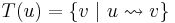
- Stark zusammenhängende Komponenten
- Die stark zusammenhängende Komponenten
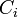
eines gerichteten Graphen sind maximale Teilgraphen, so dass alle Knoten innerhalb einer Komponente von jedem anderen Knoten der selben Komponente aus erreichbar sind
Die erste Definition betrachtet den Zusammenhang asymmetrisch, ohne Beachtung der Frage, ob es auch einen Rückweg von Knoten v nach u gibt, die zweite hingegen symmetrisch.
Die transitive Hülle benötigt man, wenn man Fragen der Erreichbarkeit besonders effizient beantworten will. Wir hatten bespielsweise oben erwähnt, dass das Python-Modul json direkt und indirekt von mehreren anderen Module abhängt, die vorher installiert werden müssen, damit json funktioniert. Bittet man den Systemadministrator, das json-Paket zu installieren, will er diese Abhängigkeiten wahrscheinlich nicht erst mühsam rekursiv heraussuchen, sondern er verlangt eine Liste aller Pakete, die installiert werden müssen. Dies ist gerade die transitive Hülle von json im Abhängigkeitsgraphen. Damit man diese nicht manuell bestimmen muss, verwendet man Installationsprogramme wie z.B. pip, die die Abhängigkeiten automatisch herausfinden und installieren.
Bei der Bestimmung der transitiven Hülle modifiziert man den gegebenen Graphen, indem man jedesmal eine neue Kante (u → v) einfügt, wenn diese Kante noch nicht existiert, aber v von u aus erreichbar ist. Dies gelingt mit einer sehr einfachen Variation der Tiefensuche: Wir rufen visit(k) für jeden Knoten k auf, aber setzen die property map visited zuvor auf False zurück. Alle Knoten, die während der Rekursion erreicht werden, sind im modifizierten Graphen Nachbarn von k. Ein etwas effizienterer Ansatz ist der Algorithmus von Floyd und Warshall.
Die Bestimmung der stark zusammenhängenden Komponenten ist etwas schwieriger. Es existieren eine ganze Reihe von effizienten Algorithmen (siehe WikiPedia), deren einfachster der Algorithmus von Kosaraju ist:
gegeben: gerichteter Graph
- Bestimme die reverse post-order (mit der Funktion reverse_post_order)
- Bilde den transponierten Graphen (mit der Funktion transposeGraph)
- Bestimme die Zusammenhangskomponenten von mittels Tiefensuche, aber betrachte die Knoten dabei in der reverse post-order aus Schritt 1 (dies kann mit einer minimalen Modifikation der Funktion connectedComponents geschehen, indem man die Zeile for node in range(len(graph)): einfach nach for node in ordered: abändert, wobei ordered das Ergebnis der Funktion reverse_post_order ist, also ein Array, das die Knoten in der gewünschten Reihenfolge enthält).
Die Zusammenhangskomponenten, die man in Schritt 3 findet, sind gerade die stark zusammenhängenden Komponenten des Originalgraphen G. Die folgende Skizze zeigt diese in grün für den schwarz gezeichneten gerichteten Graphen.

Zum Beweis der Korrektheit des Algorithmus von Kosaraju zeigen wir zwei Implikationen: 1. Wenn die Knoten u und v in der selben stark zusammenhängenden Komponente liegen, werden sie in Schritt 3 des Algorithmus auch der selben Komponente zugewiesen. 2. Wenn die Knoten u und v in Schritt 3 der selben Komponente zugewiesen wurden, müssen sie auch in der selben stark zusammenhängenden Komponente liegen.
- Knoten u und v gehören zur selben stark zusammenhängenden Komponente von G. Per Definition gilt, dass u von v aus erreichbar ist und umgekehrt. Dies muss auch im transponierten Graphen GT gelten (der Weg wird jetzt zum Weg und umgekehrt). Wird u bei der Tiefensuche in Schritt 3 vor v expandiert, ist v von u aus erreichbar und gehört somit zur selben Komponente. Das umgekehrte gilt, wenn v vor u expandiert wird. Daraus folgt die Behauptung 1.
- Knoten u und v werden in Schritt 3 der selben Komponente zugewiesen: Sei x der Anker dieser Komponente. Da u in der gleichen Komponente wie x liegt, muss es in GT einen Weg , und demnach in G einen Weg geben. Da x der Anker seiner Komponente ist, wissen wir aber auch, dass x in der reverse post-order vor u liegt (denn der Anker ist der Knoten, mit dem eine neue Komponente gestartet wird; er muss deshalb im Array ordered als erster Konten seiner Komponente gefunden worden sein). Wir unterscheiden jetzt im Schritt 1 des Algorithmus zwei Fälle:
- u wurde bei der Bestimmung der post-order vor x expandiert. Dann kann x nur dann in der reverse post-order vor u liegen (oder, einfacher ausgedrückt, x kann nur dann in der post-order hinter u liegen), wenn x im Graphen G nicht von u aus erreichbar war. Das ist aber unmöglich, weil wir ja schon wissen, dass es in G einen Weg gibt.
- Folglich wurde u bei der Bestimmung der post-order nach x expandiert. Da x in der post-order hinter u liegt, muss u während der Expansion von x erreicht worden sein. Deshalb muss es in G auch einen Weg geben.
- Somit sind x und u in der selben stark zusammenhängenden Komponente. Die gleiche Überlegung gilt für x und v. Wegen der Transitivität der Relation "ist erreichbar" folgt daraus, dass auch u und v in der selben Komponente liegen, also die Behauptung 2.
Die folgende Skizze illustriert den Komponentengraphen, den man erhält, indem man für jede Komponente einen Knoten erzeugt (grün), und die Knoten i und j durch eine gerichtete Kante verbindet (rot), wenn es im Originalgraphen eine Kante (u → v) mit und gibt. Man sieht leicht, dass der Komponentengraph stets azyklisch sein muss, denn wären gleichzeitig von aus erreichbar, müssten sie eine gemeinsame stark zusammenhängende Komponente bilden. Daraus folgt auch, dass ein von vornherein azyklischer Graph nur triviale stark verbundene Komponenten haben kann, die aus einzelnen Knoten bestehen.

Weitere wichtige Graphenalgorithmen
Eins der wichtigsten Einsatzgebiete für Graphen ist die Optimierung, also die Suche nach der besten Lösung für ein gegebenes Problem:
- Das interval scheduling befasst sich damit, aus einer gegebenen Menge von Aufträgen die richtigen auszuwählen und sie geschickt auf die zur Verfügung stehenden Ressourcen aufzuteilen. Damit beschäftigen wir uns im Kapitel Greedy-Algorithmen und Dynamische Programmierung.
- Beim Problem des Handlungsreisenden sucht man nach der kürzesten Rundreise, die alle gegebenen Städte genau einmal besucht. Dieses Problem behandeln wir im Kapitel NP-Vollständigkeit.
- Viele weitere Anwendungen können wir leider in der Vorlesung nicht mehr behandeln, z.B.
- Algorithmen für den maximalen Fluss beantworten die Frage, wie man die Durchflussmenge durch ein Netzwerk (z.B. von Ölpipelines) maximiert.
- Beim Problem der optimalen Paarung ("matching problem" oder "assignment problem") sucht man nach einer Teilmenge der Kanten (also nach einem Teilgraphen), so dass jeder Knoten in diesem Teilgraphen höchstens den Grad 1 hat. Im neuen Graphen gruppieren die Kanten also je zwei Knoten zu einem Paar, und die Paarung soll nach jeweils anwendungsspezifischen Kriterien optimal sein. Dies benötigt man z.B. bei der optimalen Zuordnung von Gruppen, etwas beim Arbeitsamt (Zuordnung Arbeitssuchender - Stellenangebot) und in der Universität (Zuordnung Studenten - Übungsgruppen).
- In Statistik und maschinellem Lernen haben in den letzten Jahren die graphischen Modelle große Bedeutung erlangt.
- usw. usf.